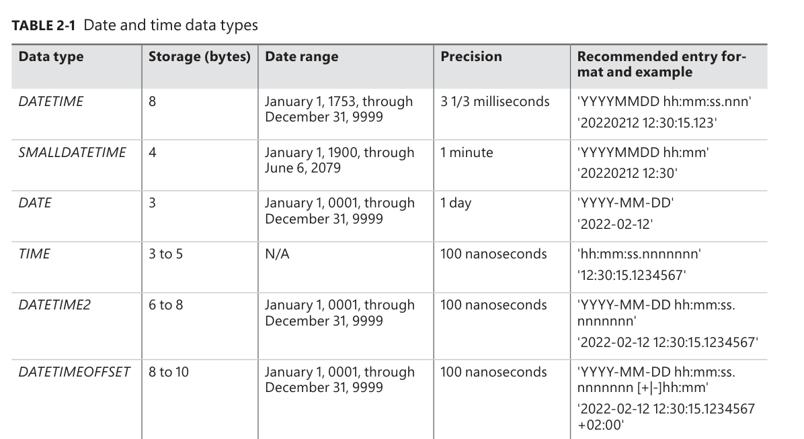
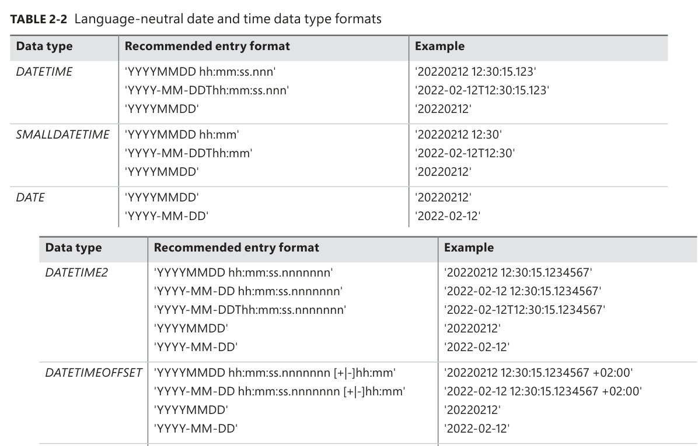
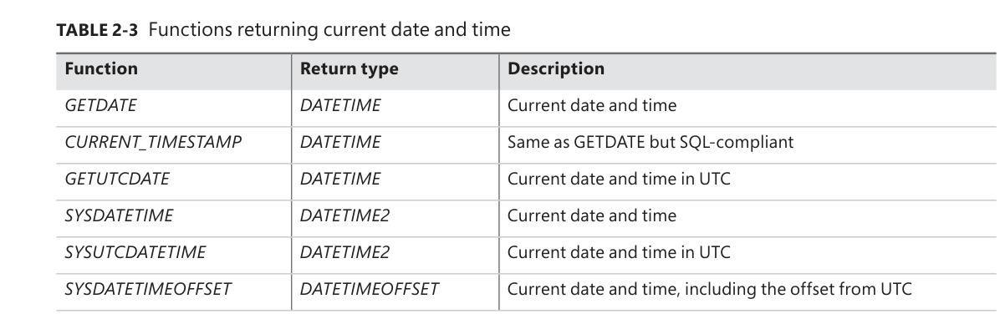
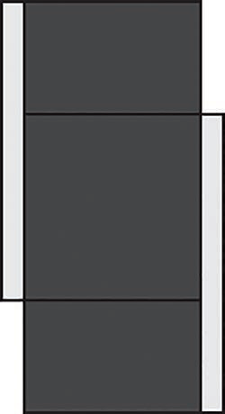
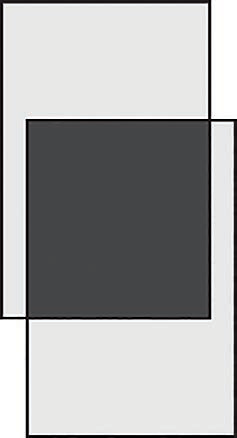
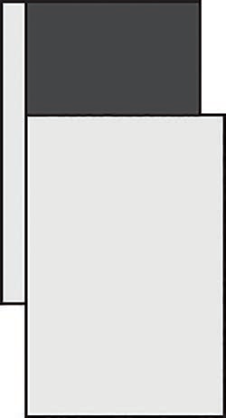

The big picture
Chapter 1 doesn’t teach you a single query. It gives you the mental model that makes every later query make sense. Ben-Gan builds the chapter in three layers.
Sets + logic
SQL stands on two branches of mathematics: set theory (collections of distinct things) and predicate logic (statements that are true or false). The relational model combines them.
Instance → database → schema → object
SQL Server is a stack. Knowing the stack explains names like Sales.Orders and tells you where your tables actually live.
Create a table, protect its data
The chapter ends with real T-SQL: CREATE TABLE plus primary keys, unique constraints, foreign keys, check constraints, and defaults.
The theory underneath SQL
Before learning syntax, the book explains what SQL is, where it came from, and the two mathematical ideas it is built on.
SQL in 60 seconds p. 2
- SQL stands for Structured Query Language. It is an ANSI/ISO standard for querying and managing data in relational database management systems (RDBMSs).
- It is declarative, not imperative: you describe what result you want, not how to compute it. SQL Server’s optimizer decides the physical steps.
- T-SQL is Microsoft’s dialect/extension of SQL. It runs on SQL Server, Azure SQL Database, Azure SQL Managed Instance, and Azure Synapse Analytics.
- Statement families: DDL (
CREATE,ALTER,DROP), DML (SELECT,INSERT,UPDATE,DELETE,TRUNCATE,MERGE), and DCL (GRANT,REVOKE). This book focuses on DML.
SELECT is DML, not a separate category. And TRUNCATE is DML, not DDL — even though it sounds like a structural change.
Set theory: a table is a set p. 3
Cantor’s definition of a set is a collection of distinct, well-defined objects, viewed as a whole. Three words in that definition do all the work:
Think of the collection, not the individual items. A table of employees is one set of employees.
No duplicates. A table without a key can hold duplicate rows, which makes it a multiset (bag), not a set.
There is no guaranteed row order. ORDER BY is only for presentation.
Columns are identified by name, not by position. Rows are identified by their key values, not by position. This is why a key is not optional in a well-designed table.
Predicate logic: true, false, or unknown p. 4
A predicate is an expression that is either true or false. The relational model uses predicates in two ways:
- For integrity: a constraint such as
salary > 0rejects rows that violate the rule. - For filtering: a query filter such as
department = 'sales'returns only matching rows.
SQL uses three-valued logic: TRUE, FALSE, and UNKNOWN. A comparison involving a missing value yields UNKNOWN. That missing value is represented by NULL — a marker, not a value. Codd actually proposed two different markers for “missing but applicable” and “missing but inapplicable”; SQL uses one NULL for both.
NULL means “the value is missing.” It is not a value, so it has no data type of its own and it never equals anything — not even another NULL.
The relational model p. 5
Dr. Edgar F. Codd created the relational model in 1969–1970, building on set theory and predicate logic. Its goal: represent data consistently, with minimal redundancy, while enforcing integrity as part of the model.
- A relation is a set of related information. In SQL, the counterpart is a table (close, but not an exact match).
- A relation has a heading (a set of attributes/columns, each with a name and a type) and a body (a set of tuples/rows).
- One relation represents one set — for example,
Customers. Operations on relations produce relations, which is what lets you nest relational expressions. - Propositions are statements that must be true or false. True propositions become rows; false ones simply don’t appear. This is the closed-world assumption.
- Types constrain which values are allowed.
INTis the set of integers in a specific range;DATEis the set of valid dates. A type is a simple form of predicate.

Illustration of the Employees relation
What you’re looking at: the same thing described in two languages. On the left, relational theory calls it a relation with a heading (a set of attributes) and a body (a set of tuples). On the right, SQL calls it a table with columns and rows. The PK marker shows that empid is the primary key.
Relations, keys, and the rules that keep data honest
A table is only useful if you can identify its rows and trust its values. That is the job of keys and constraints.
| Key / constraint | What it does | How many per table |
|---|---|---|
| Candidate key | One or more columns whose values uniquely identify a row. A table can have several. | Many possible |
| Primary key | The candidate key you choose as the preferred identifier. Enforces uniqueness and disallows NULLs. | Exactly one |
| Alternate key | Another candidate key, enforced with a UNIQUE constraint. | Many possible |
| Foreign key | Points to a candidate key in another (or the same) table. Restricts values to those that exist in the referenced key. | Many possible |
Every row is identifiable
The primary key guarantees that each row has a unique, known identity. SQL Server enforces it with a unique index behind the scenes.
Every reference points somewhere real
A foreign key guarantees that a value in the referencing table exists in the referenced table. You can’t have an order for an employee who doesn’t exist.
empid) and enforce the other with a unique constraint (say, ssn). The second one is an alternate key.
Constraints are part of the model p. 8
One of the relational model’s biggest benefits is that integrity is defined in the model and enforced by the RDBMS. That is called declarative data integrity. Enforcing rules in stored procedures or triggers instead is procedural data integrity — the book recommends the declarative route whenever possible.
Besides keys, the chapter mentions check constraints (a row must satisfy a predicate) and default constraints (a value used when none is supplied). You’ll write both in the code section below.
Normalization: stop repeating yourself
Normalization is a formal process for making sure each entity is represented by a single relation, with minimal redundancy and no update anomalies. The chapter walks through the first three normal forms.
Unique rows, atomic columns
Rows must be unique (enforce with a primary key or unique constraint), and columns should hold atomic values. “Atomic” depends on what the application needs to do with the data.
The whole key, not part of it
Meet 1NF, and every non-key column must depend on the entire candidate key — not just part of it. A column that depends only on part of a composite key is a 2NF violation.
Nothing but the key
Meet 2NF, and no non-key column may depend on another non-key column. All non-key columns must be mutually independent.
The book’s running example
Imagine an Orders table that mixes order information with order-line information:
-- One table doing two jobs (a 2NF violation)
-- Primary key is (orderid, productid)
Orders(orderid, productid, orderdate, qty, customerid, companyname)orderdate, customerid, and companyname depend only on orderid — part of the key. That violates 2NF. The fix is to split the table.

Data model before applying 2NF
What’s wrong: the primary key is (orderid, productid), but orderdate, customerid, and companyname depend only on orderid. One table is trying to represent both orders and order lines.

Data model after applying 2NF and before 3NF
What changed: the design is split into Orders (orderid, orderdate, customerid, companyname) and OrderDetails (orderid, productid, qty). Every non-key column now depends on the whole key. But customerid and companyname still depend on each other, so 3NF is not met yet.

Data model after applying 3NF
The final fix: add a Customers relation (customerid → companyname) and remove companyname from Orders. Now every non-key column depends on the key, the whole key, and nothing but the key.
OLTP vs. data warehouses
The same T-SQL language serves two very different jobs: recording transactions and analyzing history. They need opposite design choices.
| OLTP (online transactional processing) | Data warehouse (DW) | |
|---|---|---|
| Main job | Data entry: insert, update, delete | Reporting and analysis |
| Design | Normalized; one entity per table | Denormalized; fewer tables, intentional redundancy |
| Redundancy | Minimal | Intentional, for simpler queries |
| Typical shape | Many related tables | Star schema: dimension tables + a fact table |
| Reads | Simple, but often need many joins | Designed for efficient analysis |
| Platform | SQL Server / Azure SQL (SMP) | SQL Server / Azure SQL (SMP) or Azure Synapse Analytics (MPP) |

Classes of database systems
What you’re looking at: the two workloads on the left, the Microsoft platforms on the right, and the transformation process in the middle. ETL/ELT means extract, transform, load (or extract, load, transform). The DSA is a data-staging area used for cleansing. Tools include SSIS and Azure Data Factory.
Dimensions + facts
Dimension tables describe who/what/when — customers, products, employees, time. The fact table holds measures such as quantity and value for each combination of dimension keys. Data is often pre-aggregated (for example, by day).
Normalized dimensions
If you normalize a dimension into several related tables, you get a snowflake schema. A star schema is a special case of a snowflake schema.
How SQL Server is put together
The chapter now zooms out from theory to the physical and logical stack: flavors of SQL Server, instances, databases, files, and schemas.
On-premises vs. cloud p. 13
You own the box
Microsoft SQL Server installed on your hardware. You handle the hardware, OS, patching, high availability, disaster recovery, and security. You can install multiple instances and query across databases.
Microsoft owns the platform
Azure SQL Database, Azure SQL Managed Instance, and SQL Server on Azure VM. Microsoft handles the hardware and platform; you still handle index and query tuning. The cloud releases features faster than the on-premises product.
Azure SQL is a collective name for three offerings: Azure SQL Database, Azure SQL Managed Instance, and SQL Server on Azure VM. Managed Instance is the closest to on-premises parity; Azure SQL Database does not support cross-database (three-part-name) queries.
Instances p. 15
An instance is an installation of the SQL Server database engine. One computer can host several independent instances. They share physical resources (CPU, memory, disk) but are logically isolated — different security, different data.
- One instance can be the default instance; the others must be named instances. This choice is made at installation and cannot be changed later.
- Connect to the default with just the computer name:
Server1. - Connect to a named instance with a backslash:
Server1\Inst1.

Multiple instances of SQL Server on the same computer
What you’re looking at: one physical server (Server1) with a default instance plus named instances Inst1–Inst4. Each is independent at the logical level. Historically, this saved support costs by letting one machine mimic several environments.
Databases p. 16
A database is a container of objects such as tables, views, and stored procedures. Each instance can hold many databases. Setup creates five system databases; you then create your own user databases (up to 32,767 per instance).
| System database | What it holds |
|---|---|
| master | Instance-wide metadata, server configuration, and information about all databases. |
| model | The template for new databases. Changes here affect only databases created later. |
| tempdb | Temporary data: work tables, sort/hash data, row versioning. Recreated as a copy of model on every restart. |
| msdb | SQL Server Agent data: jobs, schedules, alerts, replication, backups, Database Mail, Service Broker. |
| Resource | A hidden, read-only database holding the definitions of all system objects. |
Collation is a database-level property that controls language support, case sensitivity, and sort order for character data. If you don’t specify one, the instance default is used.

An example of multiple databases on a SQL Server instance
What you’re looking at: one instance containing the five system databases and five user databases (DB1–DB5). Your application tables live in user databases, not in master or tempdb.
The physical layout: files and filegroups p. 18
- Data files hold object data: the primary data file (extension
.mdf) and optional secondary data files (.ndf). - Transaction log files (extension
.ldf) hold the information SQL Server needs to maintain transactions. Log writes are sequential — only one log file is written at a time. - Filegroups are logical groups of data files. A database must have a
PRIMARYfilegroup; it can also have user filegroups. A filegroup is the target for creating an object such as a table or index. - In-Memory OLTP can add a memory-optimized filegroup with a folder for checkpoint files.
On SQL Server (including SQL Server on Azure VM) you manage these physical files. On Azure SQL Database and Azure SQL Managed Instance, you only deal with the logical layer.

Database layout
What you’re looking at: a database made of a PRIMARY filegroup (data files .mdf/.ndf), optional user filegroups (FG1, FG2), a transaction log (.ldf), and — optionally — a memory-optimized filegroup with a folder for checkpoint data.
Schemas and objects p. 19
A database contains schemas, and schemas contain objects. A schema is both a container and a namespace. You can grant permissions at the schema level, and you use the schema name as a prefix to the object name.
| Name | Example | What it refers to |
|---|---|---|
| Two-part name | Sales.Orders | Object in a schema (recommended) |
| Three-part name | TSQLV6.Sales.Orders | Object in another database |
| Four-part name | Server1.TSQLV6.Sales.Orders | Object in another instance |
dbo. If two schemas contain an object with the same name, you might get a different object than you intended.

A database, schemas, and database objects
What you’re looking at: the containment hierarchy. A user database contains schemas (dbo, Sales, HR), and each schema contains objects such as tables. dbo is created automatically in every database.
Create tables and define data integrity
The last part of the chapter is the practical payoff: the exact T-SQL used to create a table and add declarative constraints. Run the samples in order in the book’s TSQLV6 sample database.
dbo.Employees, then adds keys and constraints to it, creates dbo.Orders, and finishes with cleanup. The copy buttons copy the code exactly as shown.
1. Create the Employees table p. 21
USE TSQLV6;
DROP TABLE IF EXISTS dbo.Employees;
CREATE TABLE dbo.Employees
(
empid INT NOT NULL,
firstname VARCHAR(30) NOT NULL,
lastname VARCHAR(30) NOT NULL,
hiredate DATE NOT NULL,
mgrid INT NULL,
ssn VARCHAR(20) NOT NULL,
salary MONEY NOT NULL
);USE TSQLV6;sets the current database context. Keeping it in scripts guarantees the objects are created in the intended database.DROP TABLE IF EXISTSmakes the script repeatable: it removes an existing table before creating a fresh one.- Each column has a name, a data type, and nullability.
NOT NULLmeans a value is required;NULLallows a missing value. mgridis nullable on purpose: aNULLmeans the employee has no manager (for example, the CEO).
NOT NULL unless you have a compelling reason to allow NULLs.
2. Add a primary key p. 23
ALTER TABLE dbo.Employees
ADD CONSTRAINT PK_Employees
PRIMARY KEY(empid);A primary key enforces uniqueness and disallows NULLs. Each table can have only one. SQL Server creates a unique index behind the scenes as the physical mechanism for enforcing it. An attempt to insert or update a duplicate empid is rejected.
3. Add a unique constraint (alternate key) p. 23
ALTER TABLE dbo.Employees
ADD CONSTRAINT UNQ_Employees_ssn
UNIQUE(ssn);A unique constraint enforces uniqueness like a primary key, but you can define several per table, and the column does not have to be NOT NULL. It implements the relational model’s alternate keys.
NULL like any other value for uniqueness, so a single-column unique constraint allows only one NULL. The SQL standard compares only non-NULL values, so it would allow many NULLs. To emulate the standard, use a filtered unique index (next block).
4. Emulate a standard unique constraint with a filtered index p. 24
CREATE UNIQUE INDEX idx_ssn_notnull
ON dbo.Employees(ssn)
WHERE ssn IS NOT NULL;The filter excludes NULLs from the index. Duplicate NULLs are allowed in the table, but duplicate non-NULL values are not. This is the SQL Server workaround for the standard’s NULL handling.
5. Create the Orders table p. 24
DROP TABLE IF EXISTS dbo.Orders;
CREATE TABLE dbo.Orders
(
orderid INT NOT NULL,
empid INT NOT NULL,
custid VARCHAR(10) NOT NULL,
orderts DATETIME2 NOT NULL,
qty INT NOT NULL,
CONSTRAINT PK_Orders
PRIMARY KEY(orderid)
);Here the primary key is defined inline, as part of CREATE TABLE. You can add constraints either at creation time or later with ALTER TABLE.
6. Add a foreign key from Orders to Employees p. 24
ALTER TABLE dbo.Orders
ADD CONSTRAINT FK_Orders_Employees
FOREIGN KEY(empid)
REFERENCES dbo.Employees(empid);This enforces referential integrity: every empid in Orders must exist in Employees. The default referential action is NO ACTION, which rejects a delete or update that would leave orphaned rows.
7. Add a self-referencing foreign key p. 25
ALTER TABLE dbo.Employees
ADD CONSTRAINT FK_Employees_Employees
FOREIGN KEY(mgrid)
REFERENCES dbo.Employees(empid);A table can reference itself. Here mgrid must point to an existing empid in the same table — the manager must also be an employee. NULL is still allowed in the foreign-key column, which is how the CEO is represented.
ON DELETE and ON UPDATE actions such as CASCADE, SET DEFAULT, and SET NULL. CASCADE propagates the delete or update to related rows; SET NULL clears the foreign key; SET DEFAULT assigns the column’s default.
8. Add a check constraint p. 25
ALTER TABLE dbo.Employees
ADD CONSTRAINT CHK_Employees_salary
CHECK(salary > 0.00);A check constraint defines a predicate that a row must satisfy. Here salaries must be positive. The database rejects an insert or update only when the predicate evaluates to FALSE; it accepts TRUE or UNKNOWN. So -1000 is rejected, while 50000 and NULL (if allowed) are accepted.
WITH NOCHECK tells SQL Server to skip validation of existing data. The book calls this a bad practice because you can no longer be sure the data is consistent.
9. Add a default constraint p. 26
ALTER TABLE dbo.Orders
ADD CONSTRAINT DFT_Orders_orderts
DEFAULT(SYSDATETIME()) FOR orderts;A default supplies a value when an insert doesn’t specify one. SYSDATETIME() returns the current date and time. After this, inserting an order without an orderts value fills it in automatically.
10. Clean up p. 26
DROP TABLE IF EXISTS dbo.Orders, dbo.Employees;Remove the sample objects when you’re done. Drop Orders first (or together, as shown) because it references Employees.
TSQLV6. Then try inserting a duplicate empid, an order with a non-existent employee, or a negative salary — the database should reject each one. That is declarative integrity doing its job.
Chapter 1 in ten bullets
- SQL is declarative. You specify the result you want; the optimizer decides how to compute it.
- T-SQL is Microsoft’s dialect of SQL and runs on SQL Server, Azure SQL, and Azure Synapse Analytics.
- A table is a set of rows. Rows are distinct and unordered; keys provide identity, and
ORDER BYprovides presentation order. - Predicates are true, false, or unknown.
NULLis a marker for a missing value, not a value. - The relational model (Codd) combines set theory and predicate logic. A relation has a heading of attributes and a body of tuples.
- Keys protect integrity: a candidate key identifies rows, a primary key is the chosen one, and a foreign key enforces references.
- Normalization removes redundancy: 1NF (unique, atomic), 2NF (the whole key), 3NF (nothing but the key).
- OLTP and data warehouses are different animals: normalized entry systems vs. denormalized star-schema reporting systems, connected by ETL/ELT.
- The architecture stack is instance → databases → schemas → objects. Use two-part names like
Sales.Orders. - Constraints are code that protects data: primary key, unique, foreign key, check, and default — all declarative.
Key terms in plain English
- Relation
- A set of related information; the relational-model counterpart of a SQL table.
- Tuple
- One row in a relation; one record in a table.
- Attribute
- A column in a relation; has a name and a type.
- Heading / body
- The columns of a relation (heading) and its rows (body).
- Predicate
- An expression that evaluates to true or false; used for filters and constraints.
- NULL
- A marker for a missing value. Not a value; comparisons with it yield UNKNOWN.
- Candidate key
- One or more columns that uniquely identify a row.
- Primary key
- The chosen candidate key; unique and NOT NULL; one per table.
- Foreign key
- Column(s) that reference a candidate key in another (or the same) table.
- Normalization
- A formal process to reduce redundancy and avoid update anomalies.
- OLTP
- Online transactional processing: systems optimized for data entry.
- Data warehouse
- A reporting-oriented database, often using a star schema.
- Star schema
- Dimension tables plus a central fact table of measures.
- ETL / ELT
- Extract, transform, load (or extract, load, transform) — moving data into a warehouse.
- Instance
- An installation of the SQL Server database engine; a computer can host several.
- Schema
- A container and namespace for database objects, such as
dboorSales. - Collation
- A database setting controlling language support, case sensitivity, and sort order.
- Filegroup
- A logical group of data files that controls where objects are stored.
Six quick questions
Try to answer before opening each one. If you can explain it in your own words, you’ve got the chapter.
Why does the book say a table without a key is not a set?
What is the difference between DDL and DML?
CREATE, ALTER, DROP. DML queries and modifies data: SELECT, INSERT, UPDATE, DELETE, TRUNCATE, MERGE. SELECT is DML, and TRUNCATE is DML — not DDL.State third normal form in one sentence.
What does a foreign key protect?
Why does the book recommend two-part object names?
dbo). If the same object name exists in multiple schemas, you might get a different object than intended. Sales.Orders is unambiguous.What is the difference between a login and a database user?
Now you write the query
Chapter 1 gave you the vocabulary. Chapter 2 teaches you the SELECT statement: how SQL Server logically processes a query, how to filter and group rows, how to shape the output, and how to handle NULLs, text, dates, and metadata.
One query, a fixed logical order
You type SELECT first, but SQL Server logically processes FROM first. That single fact explains why column aliases don’t work in WHERE, why WHERE and HAVING do different jobs, and why a query without ORDER BY has no guaranteed order.
| # | Logical phase | What happens | Clause |
|---|---|---|---|
| 1 | Choose the source | Identify the table(s) to read | FROM |
| 2 | Filter rows | Keep rows where the predicate is TRUE | WHERE |
| 3 | Arrange groups | Group rows by the listed expressions | GROUP BY |
| 4 | Filter groups | Keep groups where the predicate is TRUE | HAVING |
| 5 | Build the result | Evaluate expressions, aliases, and DISTINCT | SELECT |
| 6 | Sort | Order the result for presentation | ORDER BY |
| 7 | Filter by count | Keep a number/percentage of rows, or skip a range | TOP / OFFSET-FETCH |
FROM — where the rows come from p. 29
The FROM clause names the table. Always schema-qualify it: Sales.Orders, not just Orders. This is the first phase, so it runs before any filter or grouping.
SELECT orderid, custid, empid, orderdate, freight
FROM Sales.Orders;WHERE — filter individual rows p. 31
WHERE keeps only rows for which the predicate evaluates to TRUE. Rows that evaluate to FALSE or UNKNOWN are discarded. In the sample database, customer 71 has 31 orders out of 830.
SELECT orderid, empid, orderdate, freight
FROM Sales.Orders
WHERE custid = 71;GROUP BY — arrange rows into groups p. 32
GROUP BY creates one group per distinct combination of the listed expressions. After grouping, each group is represented by one row in the result. Non-grouped columns may appear only inside an aggregate function such as COUNT, SUM, AVG, MIN, or MAX.
SELECT
empid,
YEAR(orderdate) AS orderyear,
SUM(freight) AS totalfreight,
COUNT(*) AS numorders
FROM Sales.Orders
WHERE custid = 71
GROUP BY empid, YEAR(orderdate);COUNT(*) counts rows, including rows with NULLs. COUNT(qty) counts only known (non-NULL) values. COUNT(DISTINCT qty) counts distinct known values. Aggregates ignore NULLs.
HAVING — filter groups p. 36
WHERE filters rows before grouping; HAVING filters groups after grouping. That is why HAVING can use aggregates. In the sample query, COUNT(*) > 1 keeps only employee/year groups with more than one order.
SELECT empid, YEAR(orderdate) AS orderyear
FROM Sales.Orders
WHERE custid = 71
GROUP BY empid, YEAR(orderdate)
HAVING COUNT(*) > 1;SELECT — shape the result p. 37
The SELECT clause builds the result columns. Use AS to name expressions. A SELECT list can return duplicates (SQL is based on multiset theory), so DISTINCT removes them. Avoid SELECT *: list the columns you need.
SELECT DISTINCT empid, YEAR(orderdate) AS orderyear
FROM Sales.Orders
WHERE custid = 71;WHERE, GROUP BY, or HAVING, because those phases run before SELECT. You also cannot reuse an alias in another expression in the same SELECT list. Repeat the expression instead.
ORDER BY — sort for presentation p. 43
ORDER BY is the only phase that can see SELECT aliases. It sorts the output; it does not change which rows are returned. Without it, row order is not guaranteed. Use ASC (default) or DESC, and prefer column names over ordinal positions like ORDER BY 1, 2.
SELECT empid, YEAR(orderdate) AS orderyear, COUNT(*) AS numorders
FROM Sales.Orders
WHERE custid = 71
GROUP BY empid, YEAR(orderdate)
HAVING COUNT(*) > 1
ORDER BY empid, orderyear;ORDER BY returns an ordered result (a cursor), not a table. Some SQL constructs expect a table result, which is one reason the book recommends using table expressions when you need ordering inside a query.
TOP and OFFSET-FETCH — filter by row count p. 44
TOP is a proprietary T-SQL filter. OFFSET-FETCH is the standard alternative and supports paging. Both rely on ORDER BY to define which rows are chosen.
SELECT TOP (5) orderid, orderdate, custid, empid
FROM Sales.Orders
ORDER BY orderdate DESC;If the ORDER BY list is not unique, the result is nondeterministic. Add a tiebreaker such as orderid DESC to make it deterministic. WITH TIES keeps extra rows that tie with the last row; PERCENT returns a percentage of rows, rounded up.
SELECT TOP (5) orderid, orderdate, custid, empid
FROM Sales.Orders
ORDER BY orderdate DESC, orderid DESC;SELECT orderid, orderdate, custid, empid
FROM Sales.Orders
ORDER BY orderdate, orderid
OFFSET 50 ROWS FETCH NEXT 25 ROWS ONLY;OFFSET-FETCH requires ORDER BY. T-SQL requires OFFSET before FETCH (use OFFSET 0 ROWS if you don’t want to skip). ROW/ROWS and FIRST/NEXT are interchangeable. T-SQL does not support PERCENT or WITH TIES with OFFSET-FETCH.
Window functions
A window function computes a value for each row using a set of related rows, without collapsing those rows into a group. The OVER clause defines the window.
The book demonstrates with ROW_NUMBER, which assigns sequential integers to rows within each partition. PARTITION BY defines the partitions; the window ORDER BY defines the numbering order.
SELECT orderid, custid, val,
ROW_NUMBER() OVER(PARTITION BY custid
ORDER BY val) AS rownum
FROM Sales.OrderValues
ORDER BY custid, val;ORDER BY is not unique, ROW_NUMBER is nondeterministic. Add a tiebreaker such as orderid to guarantee a stable result.
OVER clause’s ORDER BY controls the calculation, not the output order. If you need the result sorted, add a separate presentation ORDER BY.
Filtering, comparing, and CASE expressions
Predicates are logical expressions that evaluate to TRUE, FALSE, or UNKNOWN. You can combine them with AND, OR, and NOT, and use comparison operators, IN, BETWEEN, and LIKE.
SELECT orderid, empid, orderdate
FROM Sales.Orders
WHERE orderid IN(10248, 10249, 10250);
SELECT orderid, empid, orderdate
FROM Sales.Orders
WHERE orderid BETWEEN 10300 AND 10310;
SELECT empid, firstname, lastname
FROM HR.Employees
WHERE lastname LIKE N'D%';Arithmetic and precedence
T-SQL supports +, -, *, /, and % (modulo). Division between two integers yields an integer, so 5/2 is 2, not 2.5. Cast to a numeric type when you need decimals. Parentheses have the highest precedence; use them even when not required.
SELECT orderid, productid, qty, unitprice, discount,
qty * unitprice * (1 - discount) AS val
FROM Sales.OrderDetails;CASE expressions
CASE is a scalar expression, not a statement. It returns a value and can be used in SELECT, WHERE, HAVING, ORDER BY, and CHECK constraints. There are two forms: simple (compare one value to a list) and searched (evaluate predicates). If no ELSE is specified, the default is ELSE NULL.
SELECT supplierid, COUNT(*) AS numproducts,
CASE COUNT(*) % 2
WHEN 0 THEN 'Even'
WHEN 1 THEN 'Odd'
ELSE 'Unknown'
END AS countparity
FROM Production.Products
GROUP BY supplierid;SELECT orderid, custid, val,
CASE
WHEN val < 1000.00 THEN 'Less than 1000'
WHEN val <= 3000.00 THEN 'Between 1000 and 3000'
WHEN val > 3000.00 THEN 'More than 3000'
ELSE 'Unknown'
END AS valuecate
FROM Sales.OrderValues;T-SQL also has the nonstandard IIF and CHOOSE functions, added for easier migrations from Microsoft Access. IIF(condition, a, b) returns a when the condition is TRUE, otherwise b. CHOOSE(index, a, b, ...) returns the expression at the specified position.
NULLs, GREATEST/LEAST, and all-at-once operations
NULL is a marker for a missing value, not a value. Comparisons involving NULL yield UNKNOWN. SQL treats UNKNOWN differently in filters and constraints — one of the most important practical lessons in the chapter.
| Where the predicate appears | TRUE | FALSE | UNKNOWN |
|---|---|---|---|
WHERE / HAVING filter | returned | discarded | discarded |
CHECK constraint | accepted | rejected | accepted |
So a row with a NULL salary is discarded by WHERE salary > 0, but accepted by a CHECK(salary > 0) constraint. Negating UNKNOWN still yields UNKNOWN: NOT (salary > 0) does not turn a NULL into TRUE.
Use IS NULL, not = NULL
NULL = NULL evaluates to UNKNOWN, so WHERE region = NULL returns no rows. Use the IS NULL / IS NOT NULL predicates instead.
SELECT custid, country, region, city
FROM Sales.Customers
WHERE region IS NULL;SQL Server 2022 adds the standard IS [NOT] DISTINCT FROM predicate, which treats NULL like a comparable value. It is especially useful when comparing a column to a parameter that might be NULL.
SELECT custid, country, region, city
FROM Sales.Customers
WHERE region IS NOT DISTINCT FROM N'WA';GROUP BY and ORDER BY, two NULLs are treated as equal. T-SQL sorts NULLs before non-NULL values in ascending order. For a UNIQUE constraint, T-SQL treats NULL like a value, so a single-column unique constraint allows only one NULL.
COALESCE and string concatenation
Concatenating a string with NULL yields NULL. COALESCE returns the first non-NULL argument; CONCAT automatically treats NULL as an empty string.
SELECT custid, country, region, city,
country + COALESCE(N',' + region, N'') + N',' + city AS location
FROM Sales.Customers;GREATEST and LEAST (SQL Server 2022+)
MAX and MIN are grouped aggregates: they operate across rows in a group. GREATEST and LEAST are row-level alternatives: they compare expressions across columns for each row. They accept 1–254 arguments and ignore NULLs (returning NULL only if all inputs are NULL).
SELECT orderid, requireddate, shippeddate,
GREATEST(requireddate, shippeddate) AS latestdate,
LEAST(requireddate, shippeddate) AS earliestdate
FROM Sales.Orders
WHERE custid = 8;All-at-once operations
SQL is set-based. The clauses describe a result; the engine is free to evaluate expressions in any order. That is why you cannot rely on left-to-right short-circuiting in WHERE. The order of WHEN clauses in a CASE expression, however, is guaranteed.
SELECT col1, col2
FROM dbo.T1
WHERE
CASE
WHEN col1 = 0 THEN 'no'
WHEN col2/col1 > 2 THEN 'yes'
ELSE 'no'
END = 'yes';The first WHEN is evaluated before the second, so the division is never attempted when col1 is zero. A more mathematical workaround is to avoid division altogether: (col1 > 0 AND col2 > 2*col1) OR (col1 < 0 AND col2 < 2*col1).
Working with text: types, collation, functions, LIKE
SQL Server has two families of character types, a set of collation rules that control comparison and sorting, and a rich library of string functions. The book covers the ones you will use every day.
Data types: regular vs. N-kind
CHAR / VARCHAR
Use the collation’s code page. SQL Server 2019+ supports UTF-8 with a UTF8 collation. A size in parentheses is in bytes. Fixed-length CHAR pads to the defined size; variable-length VARCHAR stores only what is needed plus two bytes of offset data.
NCHAR / NVARCHAR
Unicode. A size in parentheses is in byte pairs (two bytes each). Use the N prefix for literals: N'Itzik'. NVARCHAR(MAX) can hold up to 2 GB in a single value.
MAX lets a single value reach up to 2 GB. Values up to 8,000 bytes are stored inline; larger values are stored as large objects (LOBs). The book recommends explicit sizes and the N prefix for Unicode literals.
Collation
Collation bundles language support, dictionary sort order, case sensitivity, and accent sensitivity. For example, Latin1_General_CI_AS means code page 1252, dictionary sorting, case-insensitive (CI), accent-sensitive (AS). Collation can be set at the instance, database, column, and expression levels (Azure SQL Database: database, column, expression). The lowest level wins.
SELECT empid, firstname, lastname
FROM HR.Employees
WHERE lastname COLLATE Latin1_General_CS_AS = N'davis';@p and @P on a case-insensitive instance.
String concatenation
The + operator follows the standard: concatenating NULL yields NULL. CONCAT substitutes NULL with an empty string. CONCAT_WS takes the separator once and then the values.
SELECT empid, firstname + N' ' + lastname AS fullname
FROM HR.Employees;
SELECT custid, country, region, city,
CONCAT(country, N',' + region, N',' + city) AS location
FROM Sales.Customers;
SELECT custid, country, region, city,
CONCAT_WS(N',', country, region, city) AS location
FROM Sales.Customers;The most useful string functions
| Function | What it does |
|---|---|
SUBSTRING(s, start, length) | Extracts a substring. |
LEFT(s, n) / RIGHT(s, n) | Extracts from the left or right end. |
LEN(s) / DATALENGTH(s) | Characters (excluding trailing spaces) vs. bytes. |
CHARINDEX(sub, s) | Position of a substring; 0 if not found. |
PATINDEX(pattern, s) | Position of a LIKE-style pattern. |
REPLACE(s, a, b) | Replaces all occurrences of a with b. |
TRANSLATE(s, from, to) | Performs multiple one-to-one character replacements. |
STUFF(s, pos, len, insert) | Deletes a substring and inserts another. |
UPPER / LOWER / TRIM | Case conversion and trimming. |
STRING_SPLIT / STRING_AGG | Split a delimited list / concatenate a group. |
SELECT SUBSTRING('abcde', 1, 3);
SELECT RIGHT('abcde', 3);
SELECT LEN(N'abcde');
SELECT DATALENGTH(N'abcde');
SELECT CHARINDEX(' ', 'Itzik Ben-Gan');
SELECT PATINDEX('%[0-9]%', 'abcd123efgh');
SELECT REPLACE('1-a 2-b', '-', ':');
SELECT TRANSLATE('123.456.789,00', '.,', ',.');
SELECT STUFF('xyz', 2, 1, 'abc');
SELECT RTRIM(LTRIM(' abc '));
SELECT TRIM(' abc ');SELECT CAST(value AS INT) AS myvalue
FROM STRING_SPLIT('10248,10249,10250', ',') AS S;
SELECT custid,
STRING_AGG(CAST(orderid AS VARCHAR(10)), ',')
WITHIN GROUP(ORDER BY orderdate DESC, orderid DESC) AS custorders
FROM Sales.Orders
GROUP BY custid;FORMAT uses .NET format strings and is much more expensive than alternatives such as REPLICATE and RIGHT. The book measured close to a minute on a million rows versus under a second.
The LIKE predicate
LIKE checks a character string against a pattern. % matches any string (including empty); _ matches one character; [ABC] matches one listed character; [A-E] matches a range; [^A-E] matches anything not in the range. Use ESCAPE to search for a wildcard character itself.
SELECT empid, lastname
FROM HR.Employees
WHERE lastname LIKE N'D%';
SELECT empid, lastname
FROM HR.Employees
WHERE lastname LIKE N'_e%';
SELECT empid, lastname
FROM HR.Employees
WHERE lastname LIKE N'[ABC]%';
SELECT empid, lastname
FROM HR.Employees
WHERE lastname LIKE N'[A-E]%';
SELECT empid, lastname
FROM HR.Employees
WHERE lastname LIKE N'[^A-E]%';Case sensitivity depends on the collation. LIKE often optimizes better than SUBSTRING, especially when the pattern starts with a known prefix.
Six types, neutral literals, and SARGable filters
Dates and times are where T-SQL code often breaks across languages and time zones. The book’s rules are simple: use the right type, use language-neutral literals, and avoid wrapping the filtered column in a function.
The six date and time types
| Type | Storage | Date range | Precision |
|---|---|---|---|
DATETIME (legacy) | 8 bytes | 1753–9999 | 3 1/3 ms |
SMALLDATETIME (legacy) | 4 bytes | 1900–2079 | 1 min |
DATE | 3 bytes | 0001–9999 | 1 day |
TIME | 3–5 bytes | — | 100 ns |
DATETIME2 | 6–8 bytes | 0001–9999 | 100 ns |
DATETIMEOFFSET | 8–10 bytes | 0001–9999 | 100 ns + offset |

Date and time data types
What you’re looking at: the book’s reference table for the six types. DATETIME and SMALLDATETIME are legacy types with inseparable date and time parts. DATE and TIME separate the two. DATETIME2 improves range and precision, and DATETIMEOFFSET adds the UTC offset.
For TIME, DATETIME2, and DATETIMEOFFSET, you can specify fractional-second precision from 0 to 7 (default 7). Converting to a lower precision rounds to the nearest expressible value.
Literals: use language-neutral formats
T-SQL has no date/time literal; you write a character string and SQL Server converts it. Some formats are language-dependent: '02/12/2022' is February 12 under US English and December 2 under British English. Use a language-neutral format such as '20220212' or '2022-02-12'.
SET LANGUAGE British;
SELECT CAST('02/12/2022' AS DATE);
SET LANGUAGE us_english;
SELECT CAST('02/12/2022' AS DATE);
SET LANGUAGE British;
SELECT CAST('20220212' AS DATE);
SET LANGUAGE us_english;
SELECT CAST('20220212' AS DATE);
Language-neutral date and time formats
What you’re looking at: the entry formats that SQL Server always interprets the same way, regardless of the login’s language or DATEFORMAT. The book strongly recommends these formats in application code.
If you must use a language-dependent format, use CONVERT with a style number (101 = MM/DD/YYYY, 103 = DD/MM/YYYY) or PARSE with a culture. PARSE is significantly more expensive than CONVERT.
SELECT CONVERT(DATE, '02/12/2022', 101);
SELECT CONVERT(DATE, '02/12/2022', 103);
SELECT PARSE('02/12/2022' AS DATE USING 'en-US');
SELECT PARSE('02/12/2022' AS DATE USING 'en-GB');Filtering date ranges: avoid functions on the column
Wrapping the filtered column in YEAR() or MONTH() usually prevents SQL Server from using an index efficiently. Use a half-open range instead: >= start and < next start. This is called a SARGable predicate.
SELECT orderid, custid, empid, orderdate
FROM Sales.Orders
WHERE orderdate >= '20210101' AND orderdate < '20220101';
SELECT orderid, custid, empid, orderdate
FROM Sales.Orders
WHERE orderdate >= '20220201' AND orderdate < '20220301';>= and <, not BETWEEN
If orderdate includes a time component, BETWEEN '20220201' AND '20220228' misses orders later on February 28. The half-open range >= '20220201' AND < '20220301' includes the whole month, regardless of time precision.
Current date and time functions
| Function | Returns | Notes |
|---|---|---|
GETDATE() | DATETIME | Current date and time. |
CURRENT_TIMESTAMP | DATETIME | Standard; same as GETDATE, no parentheses. |
GETUTCDATE() | DATETIME | Current UTC date and time. |
SYSDATETIME() | DATETIME2 | Higher precision. |
SYSUTCDATETIME() | DATETIME2 | Current UTC date and time. |
SYSDATETIMEOFFSET() | DATETIMEOFFSET | Current date/time with UTC offset. |

Functions returning current date and time
What you’re looking at: the six niladic functions. The book recommends CURRENT_TIMESTAMP when you want the standard option, and SYSDATETIME when you need DATETIME2 precision. None returns only a date or only a time; cast to DATE or TIME for that.
SELECT
GETDATE() AS [GETDATE],
CURRENT_TIMESTAMP AS [CURRENT_TIMESTAMP],
GETUTCDATE() AS [GETUTCDATE],
SYSDATETIME() AS [SYSDATETIME],
SYSUTCDATETIME() AS [SYSUTCDATETIME],
SYSDATETIMEOFFSET() AS [SYSDATETIMEOFFSET];
SELECT
CAST(SYSDATETIME() AS DATE) AS [current_date],
CAST(SYSDATETIME() AS TIME) AS [current_time];The date/time function toolbox
SELECT DATEADD(year, 1, '20220212');
SELECT DATEDIFF(day, '20210212', '20220212');
SELECT DATEPART(month, '20220212');
SELECT DATENAME(month, '20220212');
SELECT DATETRUNC(month, '20220212');
SELECT EOMONTH(SYSDATETIME());
DECLARE @startdate AS DATE = '20220101', @enddate AS DATE = '20221231';
SELECT DATEADD(day, value, @startdate) AS dt
FROM GENERATE_SERIES(0, DATEDIFF(day, @startdate, @enddate)) AS N;DATEADD adds units; DATEDIFF returns the difference (use DATEDIFF_BIG for differences beyond INT range); DATEPART returns an integer; DATENAME returns a name; DATETRUNC (SQL Server 2022+) floors to the start of a part; EOMONTH returns the last day of the month; GENERATE_SERIES (SQL Server 2022+) produces a sequence of numbers that you can turn into dates.
Ask the database about itself
SQL Server exposes metadata through catalog views, information schema views, and system stored procedures and functions. You can query them like any other table.
Catalog views
Catalog views provide detailed, SQL Server-specific information. sys.tables lists tables; sys.columns lists columns. Use SCHEMA_NAME, TYPE_NAME, and OBJECT_ID to translate IDs into names.
USE TSQLV6;
SELECT SCHEMA_NAME(schema_id) AS table_schema_name, name AS table_name
FROM sys.tables;
SELECT
name AS column_name,
TYPE_NAME(system_type_id) AS column_type,
max_length,
collation_name,
is_nullable
FROM sys.columns
WHERE object_id = OBJECT_ID(N'Sales.Orders');Information schema views
These views live in the INFORMATION_SCHEMA schema and are defined by the SQL standard. They cover cross-platform metadata but not SQL Server-specific features such as indexes.
SELECT TABLE_SCHEMA, TABLE_NAME
FROM INFORMATION_SCHEMA.TABLES
WHERE TABLE_TYPE = N'BASE TABLE';
SELECT
COLUMN_NAME, DATA_TYPE, CHARACTER_MAXIMUM_LENGTH,
COLLATION_NAME, IS_NULLABLE
FROM INFORMATION_SCHEMA.COLUMNS
WHERE TABLE_SCHEMA = N'Sales'
AND TABLE_NAME = N'Orders';System stored procedures and functions
sp_help returns a digest of an object: columns, indexes, constraints, and more. sp_columns and sp_helpconstraint focus on columns and constraints. Property functions return specific facts.
EXEC sys.sp_help
@objname = N'Sales.Orders';
SELECT
SERVERPROPERTY('Collation');
SELECT
DATABASEPROPERTYEX(N'TSQLV6', 'Collation');
SELECT
OBJECTPROPERTY(OBJECT_ID(N'Sales.Orders'), 'TableHasPrimaryKey');
SELECT
COLUMNPROPERTY(OBJECT_ID(N'Sales.Orders'), N'shipcountry', 'AllowsNull');Ten exercises, with the book’s solutions
The chapter ends with ten exercises. Try each one before opening the solution. The sample database is TSQLV6; the tables are Sales.Orders, Sales.OrderDetails, Sales.Customers, and HR.Employees.
Exercise 1 · Orders placed in June 2021
Use a half-open range so the filter can use an index.
SELECT orderid, orderdate, custid, empid
FROM Sales.Orders
WHERE orderdate >= '20210601'
AND orderdate < '20210701';Exercise 2 · The day before the last day of the month
EOMONTH gives the last day; DATEADD subtracts one day.
SELECT orderid, orderdate, custid, empid
FROM Sales.Orders
WHERE orderdate = DATEADD(day, -1, EOMONTH(orderdate));Exercise 3 · Last names containing the letter e at least twice
% matches any string, so %e%e% means “at least two e’s somewhere.”
SELECT empid, firstname, lastname
FROM HR.Employees
WHERE lastname LIKE '%e%e%';Exercise 4 · Orders whose total value exceeds 10,000
The requirement is about the whole order, not one order line. Group by orderid and filter with HAVING SUM(...).
SELECT orderid, SUM(qty*unitprice) AS totalvalue
FROM Sales.OrderDetails
GROUP BY orderid
HAVING SUM(qty*unitprice) > 10000
ORDER BY totalvalue DESC;Exercise 5 · Last names starting with a lowercase a–z
The sample database is case-insensitive, so force a case-sensitive collation. With dictionary sorting, list the lowercase letters explicitly.
SELECT empid, lastname
FROM HR.Employees
WHERE lastname COLLATE Latin1_General_CS_AS
LIKE N'[abcdefghijklmnopqrstuvwxyz]%';Exercise 6 · Explain the difference between the two queries
Query 1 filters rows before grouping: it counts each employee’s orders placed before May 2022. An employee appears if they had any such orders, even if they also have later orders.
Query 2 groups first, then filters groups: it keeps only employees whose latest order is before May 2022. An employee with any order since May 2022 disappears entirely.
WHERE is a row filter; HAVING is a group filter.
Exercise 7 · Top three ship-to countries by average freight in 2021
Filter the year with a range, group by country, and use TOP (3) with a deterministic order.
SELECT TOP (3) shipcountry, AVG(freight) AS avgfreight
FROM Sales.Orders
WHERE orderdate >= '20210101'
AND orderdate < '20220101'
GROUP BY shipcountry
ORDER BY avgfreight DESC;Exercise 8 · Row numbers per customer by order date
Partition by custid, order by orderdate with orderid as the tiebreaker.
SELECT custid, orderdate, orderid,
ROW_NUMBER() OVER(PARTITION BY custid
ORDER BY orderdate, orderid) AS rownum
FROM Sales.Orders
ORDER BY custid, rownum;Exercise 9 · Derive gender from title of courtesy
A simple CASE maps each title to a gender; everything else becomes 'Unknown'.
SELECT empid, firstname, lastname, titleofcourtesy,
CASE titleofcourtesy
WHEN 'Ms.' THEN 'Female'
WHEN 'Mrs.' THEN 'Female'
WHEN 'Mr.' THEN 'Male'
ELSE 'Unknown'
END AS gender
FROM HR.Employees;Exercise 10 · Sort by region with NULLs last
T-SQL sorts NULLs first in ascending order. Add a CASE as the first sort key: 1 for NULL, 0 otherwise.
SELECT custid, region
FROM Sales.Customers
ORDER BY
CASE WHEN region IS NULL THEN 1 ELSE 0 END, region;Chapter 2 in ten bullets
- Logical order matters:
FROM→WHERE→GROUP BY→HAVING→SELECT→DISTINCT→ORDER BY→TOP/OFFSET-FETCH. WHEREfilters rows;HAVINGfilters groups. OnlyHAVINGcan use aggregates.- Aliases are created in the SELECT phase. You cannot use them in
WHERE,GROUP BY, orHAVING;ORDER BYis the exception. - A table has no guaranteed order. Use
ORDER BYfor presentation; use a tiebreaker for deterministicTOP. DISTINCTremoves duplicates. SQL is based on multiset theory, so query results can contain duplicates even when the source table has a key.- NULL is a marker, not a value. Comparisons yield UNKNOWN; use
IS NULL/IS NOT NULL, orIS DISTINCT FROMin SQL Server 2022+. - Filters accept TRUE; constraints reject FALSE. That is why a NULL can pass a
CHECKbut fail aWHERE. - CASE is a scalar expression. It returns a value; the order of
WHENclauses is guaranteed, unlike the order of expressions in aWHERE. - Use language-neutral date/time literals such as
'20220212', and filter with half-open ranges (>= startand< next). - Metadata is queryable: catalog views, information schema views, and system procedures/functions.
Chapter 2 key terms
- Logical query processing
- The conceptual order in which SQL defines the phases of a query, regardless of the physical execution plan.
- Predicate
- A logical expression that evaluates to TRUE, FALSE, or UNKNOWN.
- Aggregate function
- A function such as
COUNT,SUM,AVG,MIN, orMAXthat operates on a group of rows. - Group filter
- A filter applied after grouping, such as
HAVING. - Window function
- A function that computes a value for each row using a window of rows defined by
OVER. - PARTITION BY
- Divides the window into independent partitions, such as one per customer.
- All-at-once operations
- The SQL principle that expressions are conceptually evaluated together, with no guaranteed left-to-right order.
- Collation
- A property controlling language support, sort order, case sensitivity, and accent sensitivity for character data.
- Language-neutral literal
- A date/time string such as
'20220212'that is interpreted the same way under any language setting. - SARGable
- A filter that can use an index efficiently, typically because the column itself is not wrapped in a function.
- Catalog view
- A SQL Server-specific view such as
sys.tablesorsys.columnsthat exposes metadata. - Information schema
- A standard set of views (
INFORMATION_SCHEMA.TABLES,COLUMNS, …) for cross-platform metadata.
Six quick questions
Try to answer before opening each one. If you can explain it in your own words, you’ve got the chapter.
In what logical order are the query clauses processed?
FROM → WHERE → GROUP BY → HAVING → SELECT (expressions, then DISTINCT) → ORDER BY → TOP/OFFSET-FETCH. The keyed-in order starts with SELECT, which is why aliases are not available earlier.What is the difference between WHERE and HAVING?
WHERE filters individual rows before grouping. HAVING filters groups after grouping, so it can use aggregate functions such as COUNT(*) > 1.Why can’t you use a SELECT alias in the WHERE clause?
WHERE is logically processed before SELECT. The alias does not exist yet. Repeat the expression, or use a table expression if you need to reference the alias.What does NULL = NULL return, and what should you use instead?
IS NULL / IS NOT NULL, or IS [NOT] DISTINCT FROM in SQL Server 2022+.Why is a half-open date range better than BETWEEN for dates with a time component?
BETWEEN '20220201' AND '20220228' misses times later on February 28. >= '20220201' AND < '20220301' includes the whole month and is also more likely to use an index (SARGable).What is the difference between COUNT(*) and COUNT(column)?
COUNT(*) counts rows, including rows where the column is NULL. COUNT(column) counts only non-NULL values. COUNT(DISTINCT column) counts distinct non-NULL values.Put the tables together
Chapter 2 queried one table. Chapter 3 combines tables with the JOIN operator: cross joins, inner joins, and outer joins — plus the composite, non-equi, and multi-join patterns, and the ON-vs-WHERE rule that prevents silent outer-join bugs.
The Cartesian product
The FROM clause is the first logical phase, and table operators live there. T-SQL supports four: JOIN (standard), plus APPLY, PIVOT, and UNPIVOT (T-SQL extensions). This chapter focuses on JOIN.
| Join type | Logical phases | What it returns |
|---|---|---|
| Cross join | Cartesian product | Every row of the first table paired with every row of the second |
| Inner join | Cartesian product + filter | Only pairs for which the ON predicate is TRUE |
| Outer join | Cartesian product + filter + add outer rows | Inner matches plus unmatched rows from the preserved side, with NULLs |
A cross join pairs each of the m rows in one input with all n rows in the other, producing m × n rows. T-SQL supports both the SQL-92 CROSS JOIN syntax and the older SQL-89 comma syntax.
USE TSQLV6;
SELECT C.custid, E.empid
FROM Sales.Customers AS C
CROSS JOIN HR.Employees AS E;The sample database has 91 customers and 9 employees, so this returns 819 rows. The SQL-89 equivalent is FROM Sales.Customers AS C, HR.Employees AS E. Both are standard and perform identically; the book recommends the SQL-92 syntax for consistency and safety.
Self cross joins
You can join two instances of the same table. Aliasing is mandatory in a self join; otherwise every column name is ambiguous. Nine employees produce 81 pairs.
SELECT
E1.empid, E1.firstname, E1.lastname,
E2.empid, E2.firstname, E2.lastname
FROM HR.Employees AS E1
CROSS JOIN HR.Employees AS E2;Producing a table of numbers
Cross joins are a classic way to generate a sequence of integers. Create a Digits table with 0–9, then cross join three instances to get 1,000 numbers. Add more instances for more numbers.
USE TSQLV6;
DROP TABLE IF EXISTS dbo.Digits;
CREATE TABLE dbo.Digits(digit INT NOT NULL PRIMARY KEY);
INSERT INTO dbo.Digits(digit)
VALUES (0),(1),(2),(3),(4),(5),(6),(7),(8),(9);SELECT D3.digit * 100 + D2.digit * 10 + D1.digit + 1 AS n
FROM dbo.Digits AS D1
CROSS JOIN dbo.Digits AS D2
CROSS JOIN dbo.Digits AS D3
ORDER BY n;GENERATE_SERIES produces a sequence of numbers directly, so the cross-join technique is mainly for older versions. The sample database also includes an auxiliary dbo.Nums table.
Matches only
An inner join applies the Cartesian product and then filters rows by the ON predicate. Only rows for which the predicate is TRUE survive; FALSE and UNKNOWN are discarded.
USE TSQLV6;
SELECT E.empid, E.firstname, E.lastname, O.orderid
FROM HR.Employees AS E
INNER JOIN Sales.Orders AS O
ON E.empid = O.empid;Conceptually, SQL Server first produces 9 × 830 = 7,470 pairs, then filters to the 830 matching pairs. The INNER keyword is optional; JOIN alone means inner join. The SQL-89 equivalent puts the predicate in WHERE:
SELECT E.empid, E.firstname, E.lastname, O.orderid
FROM HR.Employees AS E, Sales.Orders AS O
WHERE E.empid = O.empid;Why the SQL-92 syntax is safer
If you forget the ON clause in SQL-92, the query fails with a syntax error. If you forget the join predicate in the SQL-89 syntax, the query silently becomes a cross join — a logical bug that may go unnoticed. The SQL-92 syntax is also the only one that supports outer joins, so the book recommends it consistently.
-- This fails: Incorrect syntax near ';'
SELECT E.empid, E.firstname, E.lastname, O.orderid
FROM HR.Employees AS E
INNER JOIN Sales.Orders AS O;Composite, non-equi, and multi-joins
Joins can match on several columns, use operators other than equality, and chain together across many tables.
Composite joins
A composite join matches on multiple attributes. This is common when a primary key–foreign key relationship spans more than one column. In the sample database, OrderDetails is keyed on (orderid, productid), so an audit table that references it needs both columns in the ON clause.
SELECT OD.orderid, OD.productid, OD.qty,
ODA.dt, ODA.loginname, ODA.oldval, ODA.newval
FROM Sales.OrderDetails AS OD
INNER JOIN Sales.OrderDetailsAudit AS ODA
ON OD.orderid = ODA.orderid
AND OD.productid = ODA.productid
WHERE ODA.columnname = N'qty';Non-equi joins
An equi join uses only equality. A non-equi join uses any other operator. A theta join is an inner join with an explicit binary predicate; both equi and non-equi joins are theta joins. T-SQL does not implement the standard NATURAL JOIN.
The following self join uses < to produce each pair of employees once: no self-pairs and no mirrored duplicates. Of the 81 pairs a cross join would return, 36 remain.
SELECT
E1.empid, E1.firstname, E1.lastname,
E2.empid, E2.firstname, E2.lastname
FROM HR.Employees AS E1
INNER JOIN HR.Employees AS E2
ON E1.empid < E2.empid;Multi-join queries
A join operator works on two tables, but a query can chain many. Table operators are logically processed in written order: the result of the first join becomes the left input of the second, and so on. The engine may reorder cross and inner joins internally for optimization, because reordering them cannot change the result.
SELECT
C.custid, C.companyname, O.orderid,
OD.productid, OD.qty
FROM Sales.Customers AS C
INNER JOIN Sales.Orders AS O
ON C.custid = O.custid
INNER JOIN Sales.OrderDetails AS OD
ON O.orderid = OD.orderid;Keep the rows that don’t match
An outer join adds a third phase: after the Cartesian product and the filter, it adds back the unmatched rows from the preserved side, using NULLs as placeholders for the nonpreserved side.
The three fundamental join types
What you’re looking at: an original study diagram (the book has no figures for this chapter). A cross join pairs every row with every row. An inner join keeps only the overlap. A left outer join keeps all of T1 plus the overlap; a right outer join keeps all of T2 plus the overlap; a full outer join keeps everything. The dark lens is the matched region.
Left, right, and full outer joins
The preserved side is the table whose rows you want to keep. The nonpreserved side may contribute NULLs. A left outer join preserves the left table; a right outer join preserves the right table; a full outer join preserves both.
SELECT C.custid, C.companyname, O.orderid
FROM Sales.Customers AS C
LEFT OUTER JOIN Sales.Orders AS O
ON C.custid = O.custid;Customers 22 and 57 placed no orders. The outer join returns them with NULL in the order columns; an inner join would drop them. The result has 832 rows: 830 inner rows plus 2 outer rows.
The ON vs. WHERE rule
This is the most important practical rule in the chapter. The ON predicate is nonfinal: it decides which rows from the nonpreserved side match, but it does not decide whether a preserved row appears. The WHERE predicate is final: it runs after outer rows are produced. If you put a predicate on the nonpreserved side in WHERE, all outer rows are discarded and the outer join silently becomes an inner join.
SELECT C.custid, C.companyname, O.orderid, O.orderdate
FROM Sales.Customers AS C
LEFT OUTER JOIN Sales.Orders AS O
ON C.custid = O.custid
WHERE O.orderdate >= '20220101';For customers with no orders, O.orderdate is NULL, so the predicate evaluates to UNKNOWN and the WHERE clause removes those rows. The outer join becomes an inner join. If the date condition is meant to control which orders match, put it in the ON clause.
Finding customers with no orders
To return only outer rows, filter the nonpreserved side for NULL in the WHERE clause. Choose a column that can be NULL only for an outer row — a primary key, the join column, or a NOT NULL column.
SELECT C.custid, C.companyname
FROM Sales.Customers AS C
LEFT OUTER JOIN Sales.Orders AS O
ON O.custid = C.custid
WHERE O.orderid IS NULL;Including missing values
Outer joins are also a tool for reporting on gaps. To return every date in a range — including dates with no orders — generate the dates with dbo.Nums, then left join to Orders.
SELECT DATEADD(day, Nums.n - 1, CAST('20200101' AS DATE)) AS orderdate,
O.orderid, O.custid, O.empid
FROM dbo.Nums
LEFT OUTER JOIN Sales.Orders AS O
ON DATEADD(day, Nums.n - 1, CAST('20200101' AS DATE)) = O.orderdate
WHERE Nums.n <= DATEDIFF(day, '20200101', '20221231') + 1
ORDER BY orderdate;Dates with no orders appear with NULLs in the order columns. SQL Server 2022+ can replace dbo.Nums with GENERATE_SERIES.
Outer joins in multi-join queries
Table operators are processed in written order. If an outer join is followed by an inner join that compares a NULL from the nonpreserved side, the outer rows are discarded. The outer join is effectively nullified.
SELECT C.custid, O.orderid, OD.productid, OD.qty
FROM Sales.Customers AS C
LEFT OUTER JOIN Sales.Orders AS O
ON C.custid = O.custid
INNER JOIN Sales.OrderDetails AS OD
ON O.orderid = OD.orderid;Customers 22 and 57 disappear because O.orderid is NULL for them, so the second join’s predicate is UNKNOWN. Three fixes:
SELECT C.custid, O.orderid, OD.productid, OD.qty
FROM Sales.Customers AS C
LEFT OUTER JOIN Sales.Orders AS O
ON C.custid = O.custid
LEFT OUTER JOIN Sales.OrderDetails AS OD
ON O.orderid = OD.orderid;SELECT C.custid, O.orderid, OD.productid, OD.qty
FROM Sales.Orders AS O
INNER JOIN Sales.OrderDetails AS OD
ON O.orderid = OD.orderid
RIGHT OUTER JOIN Sales.Customers AS C
ON O.custid = C.custid;SELECT C.custid, O.orderid, OD.productid, OD.qty
FROM Sales.Customers AS C
LEFT OUTER JOIN
(Sales.Orders AS O
INNER JOIN Sales.OrderDetails AS OD
ON O.orderid = OD.orderid)
ON C.custid = O.custid;Fix 1 preserves orders that have no order lines, which is usually not what you want. Fix 2 produces the outer rows last, so they survive. Fix 3 treats the inner join as one unit and is often the clearest.
COUNT(*) vs. COUNT(column) with outer joins
COUNT(*) counts rows, including outer rows. If you want to count only matches, count a column from the nonpreserved side: COUNT(O.orderid) ignores the NULLs in outer rows.
SELECT C.custid, COUNT(O.orderid) AS numorders
FROM Sales.Customers AS C
LEFT OUTER JOIN Sales.Orders AS O
ON O.custid = C.custid
GROUP BY C.custid;Customers 22 and 57 now show 0 instead of 1. Use a column that can be NULL only for an outer row, such as the primary key orderid.
Nine exercises, with the book’s solutions
Try each one before opening the solution. The sample database is TSQLV6; the main tables are HR.Employees, Sales.Customers, Sales.Orders, Sales.OrderDetails, and dbo.Nums.
Exercise 1-1 · Five copies of each employee row
Cross join Employees with dbo.Nums, then filter to five numbers.
SELECT E.empid, E.firstname, E.lastname, N.n
FROM HR.Employees AS E
CROSS JOIN dbo.Nums AS N
WHERE N.n <= 5
ORDER BY n, empid;Exercise 1-2 · A row for each employee and each day, June 12–16, 2022
Cross join with dbo.Nums, use DATEDIFF to calculate the number of days, and add n - 1 days to the start date.
SELECT E.empid,
DATEADD(day, D.n - 1, CAST('20220612' AS DATE)) AS dt
FROM HR.Employees AS E
CROSS JOIN dbo.Nums AS D
WHERE D.n <= DATEDIFF(day, '20220612', '20220616') + 1
ORDER BY empid, dt;Exercise 2 · Fix the invalid alias references
The query aliases the tables as C and O, but then refers to Customers and Orders. Once aliased, only the alias is available. Use the aliases (or drop the aliases and use the full names).
SELECT C.custid, C.companyname, O.orderid, O.orderdate
FROM Sales.Customers AS C
INNER JOIN Sales.Orders AS O
ON C.custid = O.custid;Exercise 3 · US customers with total orders and quantities
Join all three tables, filter by country, group by customer. Because the join produces one row per order line, use COUNT(DISTINCT O.orderid) for the number of orders.
SELECT C.custid, COUNT(DISTINCT O.orderid) AS numorders,
SUM(OD.qty) AS totalqty
FROM Sales.Customers AS C
INNER JOIN Sales.Orders AS O
ON O.custid = C.custid
INNER JOIN Sales.OrderDetails AS OD
ON OD.orderid = O.orderid
WHERE C.country = N'USA'
GROUP BY C.custid;Exercise 4 · Customers and their orders, including customers with no orders
A left outer join preserves all customers.
SELECT C.custid, C.companyname, O.orderid, O.orderdate
FROM Sales.Customers AS C
LEFT OUTER JOIN Sales.Orders AS O
ON O.custid = C.custid;Exercise 5 · Customers who placed no orders
Left join, then keep only outer rows with WHERE O.orderid IS NULL.
SELECT C.custid, C.companyname
FROM Sales.Customers AS C
LEFT OUTER JOIN Sales.Orders AS O
ON O.custid = C.custid
WHERE O.orderid IS NULL;Exercise 6 · Customers with orders on February 12, 2022
An inner join plus a date filter is enough, because the request only asks for customers with orders on that date.
SELECT C.custid, C.companyname, O.orderid, O.orderdate
FROM Sales.Customers AS C
INNER JOIN Sales.Orders AS O
ON O.custid = C.custid
WHERE O.orderdate = '20220212';Exercise 7 · All customers, matching orders only on February 12, 2022
Preserve all customers with a left outer join, and put the date predicate in ON — it is a nonfinal matching predicate.
SELECT C.custid, C.companyname, O.orderid, O.orderdate
FROM Sales.Customers AS C
LEFT OUTER JOIN Sales.Orders AS O
ON O.custid = C.custid
AND O.orderdate = '20220212';Exercise 8 · Why the WHERE OR query is wrong
The query is:
SELECT C.custid, C.companyname, O.orderid, O.orderdate
FROM Sales.Customers AS C
LEFT OUTER JOIN Sales.Orders AS O
ON O.custid = C.custid
WHERE O.orderdate = '20220212'
OR O.orderid IS NULL;It keeps customers with an order on February 12 and customers with no orders at all. But it drops customers who placed orders on other dates — and Exercise 7 requires all customers. The date predicate belongs in ON, not WHERE.
Exercise 9 · All customers with a Yes/No for February 12, 2022
Left join with the date predicate in ON, then use a CASE expression on the nonpreserved side. DISTINCT collapses multiple matching orders into one row per customer.
SELECT DISTINCT C.custid, C.companyname,
CASE WHEN O.orderid IS NOT NULL THEN 'Yes' ELSE 'No' END
AS HasOrderOn20220212
FROM Sales.Customers AS C
LEFT OUTER JOIN Sales.Orders AS O
ON O.custid = C.custid
AND O.orderdate = '20220212';Chapter 3 in ten bullets
JOINis a table operator processed in theFROMclause. Cross, inner, and outer are the three fundamental types.- A cross join is a Cartesian product: every row of the first table paired with every row of the second, producing m × n rows.
- An inner join is a Cartesian product plus a filter: only pairs where the
ONpredicate is TRUE survive. - Use the SQL-92 syntax. It is the only syntax that supports outer joins, and a missing
ONclause fails loudly instead of silently becoming a cross join. - Composite joins match on multiple columns; non-equi joins use operators other than equality.
- Multi-joins are processed in written order: each join’s result becomes the left input of the next. The engine may reorder cross and inner joins for optimization.
- An outer join adds unmatched rows from the preserved side, using NULLs for the nonpreserved side.
ONis nonfinal;WHEREis final. Filtering the nonpreserved side inWHEREturns an outer join into an inner join.- Outer rows can be nullified by a later inner join or right outer join that compares their NULLs. Use nested joins or reorder the joins.
COUNT(*)counts outer rows;COUNT(O.orderid)counts only matches. Use a column that is NULL only for outer rows.
Chapter 3 key terms
- Cross join
- A join that returns the Cartesian product of two tables: every row paired with every row.
- Inner join
- A join that returns only rows for which the
ONpredicate is TRUE. - Outer join
- A join that preserves unmatched rows from one or both sides, filling the other side with NULLs.
- Preserved side
- The table whose rows an outer join keeps, even when no match exists.
- Nonpreserved side
- The table that may contribute NULLs in outer rows.
- Inner row / outer row
- An inner row has a match; an outer row has no match and contains NULLs on the nonpreserved side.
- Composite join
- A join whose
ONpredicate matches on more than one column. - Non-equi join
- A join whose predicate uses an operator other than equality, such as
<or>. - Theta join
- An inner join with an explicit binary predicate; both equi and non-equi joins are theta joins.
- Multi-join
- A query with more than one table operator, processed in written order.
- Nonfinal predicate
- A matching predicate in
ON; it controls which rows match, not whether preserved rows survive. - Final predicate
- A filter in
WHERE, applied after outer rows are produced. - Nested join
- A join grouped with parentheses so it is treated as a single unit by an outer join.
Six quick questions
Try to answer before opening each one. If you can explain it in your own words, you’ve got the chapter.
What logical phases does each fundamental join type apply?
Why does the book recommend the SQL-92 join syntax?
ON clause. The SQL-89 comma syntax silently turns a forgotten predicate into a cross join, which is a logical bug that can go unnoticed.What is the difference between a predicate in ON and a predicate in WHERE?
ON is a nonfinal matching predicate: it decides which rows from the nonpreserved side match. WHERE is a final filter, applied after outer rows are produced. Putting a nonpreserved-side predicate in WHERE discards all outer rows and turns the outer join into an inner join.How do you return customers who placed no orders?
Customers to Orders, then filter with WHERE O.orderid IS NULL. Choose a column that can be NULL only for an outer row, such as the primary key, the join column, or a NOT NULL column.Why can an outer join followed by an inner join silently become an inner join?
Why use COUNT(O.orderid) instead of COUNT(*) with an outer join?
COUNT(*) counts outer rows too, so a customer with no orders would show a count of 1. COUNT(O.orderid) ignores the NULL in the nonpreserved side, so the customer shows 0.Queries inside queries
A subquery is an inner query whose result is used by an outer query. Self-contained subqueries stand alone; correlated subqueries depend on the outer row. Chapter 4 shows when to use each, how to use EXISTS, and how to avoid the NULL and column-name traps that make subqueries silently wrong.
A query that stands on its own
A subquery is a query nested inside another query. The outer query returns its result to the caller; the inner query’s result is used by the outer query. A self-contained subquery does not depend on any table in the outer query, so it can be evaluated once and debugged on its own.
Scalar subqueries
A scalar subquery returns a single value. It can appear anywhere a single-valued expression can appear, such as WHERE or SELECT. It must return at most one value: no rows becomes NULL, and more than one row is an error.
The book first shows the “old way” with a variable, then replaces the variable with a subquery.
USE TSQLV6;
DECLARE @maxid AS INT = (SELECT MAX(orderid)
FROM Sales.Orders);
SELECT orderid, orderdate, empid, custid
FROM Sales.Orders
WHERE orderid = @maxid;SELECT orderid, orderdate, empid, custid
FROM Sales.Orders
WHERE orderid = (SELECT MAX(O.orderid)
FROM Sales.Orders AS O);D%, two employees match and the query fails with “Subquery returned more than 1 value.” Use IN when the subquery can return multiple values.
SELECT orderid
FROM Sales.Orders
WHERE empid =
(SELECT E.empid
FROM HR.Employees AS E
WHERE E.lastname LIKE N'C%');SELECT orderid
FROM Sales.Orders
WHERE empid =
(SELECT E.empid
FROM HR.Employees AS E
WHERE E.lastname LIKE N'D%');Multivalued subqueries
A multivalued subquery returns multiple values in a single column. The IN predicate is the natural fit: it returns TRUE if the outer value equals any value from the subquery.
SELECT orderid
FROM Sales.Orders
WHERE empid IN
(SELECT E.empid
FROM HR.Employees AS E
WHERE E.lastname LIKE N'D%');The same task can be written with a join. The book’s advice: there is no reliable rule that subqueries are always faster or slower than joins. Write the intuitive solution first, then revise if performance is not acceptable.
SELECT O.orderid
FROM HR.Employees AS E
INNER JOIN Sales.Orders AS O
ON E.empid = O.empid
WHERE E.lastname LIKE N'D%';SELECT custid, orderid, orderdate, empid
FROM Sales.Orders
WHERE custid IN
(SELECT C.custid
FROM Sales.Customers AS C
WHERE C.country = N'USA');SELECT custid, companyname
FROM Sales.Customers
WHERE custid NOT IN
(SELECT O.custid
FROM Sales.Orders AS O);Several subqueries in one query
The book combines scalar and multivalued subqueries to find missing order IDs. First create a table with the even-numbered order IDs, then use MIN and MAX scalar subqueries for the range and a multivalued NOT IN subquery for the existing IDs.
USE TSQLV6;
DROP TABLE IF EXISTS dbo.Orders;
CREATE TABLE dbo.Orders(orderid INT NOT NULL CONSTRAINT PK_Orders PRIMARY KEY);
INSERT INTO dbo.Orders(orderid)
SELECT orderid
FROM Sales.Orders
WHERE orderid % 2 = 0;SELECT n
FROM dbo.Nums
WHERE n BETWEEN (SELECT MIN(O.orderid) FROM dbo.Orders AS O)
AND (SELECT MAX(O.orderid) FROM dbo.Orders AS O)
AND n NOT IN (SELECT O.orderid FROM dbo.Orders AS O);DROP TABLE IF EXISTS dbo.Orders;Does a matching row exist?
EXISTS accepts a subquery and returns TRUE if the subquery returns at least one row, FALSE otherwise. It uses two-valued logic — there is no “unknown” case.
SELECT custid, companyname
FROM Sales.Customers AS C
WHERE country = N'Spain'
AND EXISTS
(SELECT * FROM Sales.Orders AS O
WHERE O.custid = C.custid);Read it like English: “return customers from Spain if they have any orders where the order’s customer ID matches the customer’s ID.” Negate it with NOT EXISTS to find customers who did not place orders.
SELECT custid, companyname
FROM Sales.Customers AS C
WHERE country = N'Spain'
AND NOT EXISTS
(SELECT * FROM Sales.Orders AS O
WHERE O.custid = C.custid);SELECT * is fine here
EXISTS only cares whether rows exist, not what they contain. The engine can stop as soon as it finds one row, and it ignores the subquery’s SELECT list for index selection. The book prefers EXISTS(SELECT * FROM ...) over EXISTS(SELECT 1 FROM ...) because it reads more naturally.
“The row before this one”
Tables have no order, so “previous” must be defined in terms of values. The book defines the previous order as the maximum order ID that is smaller than the current one, and the next order as the minimum order ID that is greater than the current one.
SELECT orderid, orderdate, empid, custid,
(SELECT MAX(O2.orderid)
FROM Sales.Orders AS O2
WHERE O2.orderid < O1.orderid) AS prevorderid
FROM Sales.Orders AS O1;SELECT orderid, orderdate, empid, custid,
(SELECT MIN(O2.orderid)
FROM Sales.Orders AS O2
WHERE O2.orderid > O1.orderid) AS nextorderid
FROM Sales.Orders AS O1;The first order has no previous order, so the subquery returns NULL. The last order has no next order, so it also returns NULL. Window functions such as LAG and LEAD make this easier; the book covers them in Chapter 7.
A running total with a correlated subquery
A running aggregate accumulates values in order. The book uses the view Sales.OrderTotalsByYear, which holds total quantities by year, and computes a running total for each year.
SELECT orderyear, qty,
(SELECT SUM(O2.qty)
FROM Sales.OrderTotalsByYear AS O2
WHERE O2.orderyear <= O1.orderyear) AS runqty
FROM Sales.OrderTotalsByYear AS O1
ORDER BY orderyear;For each year in O1, the subquery sums all quantities in O2 for that year and earlier years. Window aggregate functions can do this more easily and efficiently; the book covers them in Chapter 7.
Two traps: NULLs and column names
Subqueries can be silently wrong. The two classic traps are NOT IN with a NULL in the subquery, and an unprefixed column name that accidentally binds to the outer table.
NULL trouble with NOT IN
The query below looks correct and returns customers 22 and 57 — until you insert an order with a NULL customer ID. Then it returns an empty set.
SELECT custid, companyname
FROM Sales.Customers
WHERE custid NOT IN(SELECT O.custid
FROM Sales.Orders AS O);INSERT INTO Sales.Orders
(custid, empid, orderdate, requireddate, shippeddate, shipperid,
freight, shipname, shipaddress, shipcity, shipregion,
shippostalcode, shipcountry)
VALUES(NULL, 1, '20220212', '20220212',
'20220212', 1, 123.00, N'abc', N'abc', N'abc',
N'abc', N'abc', N'abc');Why? For a customer such as 22, the comparison with known IDs is FALSE, but the comparison with the NULL is UNKNOWN. FALSE OR UNKNOWN is UNKNOWN. Applying NOT gives UNKNOWN again, and a query filter discards UNKNOWN. So NOT IN against a subquery that contains a NULL always returns an empty set.
Two fixes: filter the NULLs out of the subquery, or use NOT EXISTS, which uses two-valued logic and handles NULLs naturally.
SELECT custid, companyname
FROM Sales.Customers
WHERE custid NOT IN(SELECT O.custid
FROM Sales.Orders AS O
WHERE O.custid IS NOT NULL);SELECT custid, companyname
FROM Sales.Customers AS C
WHERE NOT EXISTS
(SELECT *
FROM Sales.Orders AS O
WHERE O.custid = C.custid);DELETE FROM Sales.Orders WHERE custid IS NULL;NOT NULL. When you write NOT IN, think explicitly about whether the subquery can return a NULL. If it can, prefer NOT EXISTS.
Substitution errors in column names
Unprefixed column names are resolved from the inner scope outward. If the inner table does not have the column, SQL Server looks in the outer table. A small naming difference — shipper_id vs. shipperid — can turn a self-contained subquery into a correlated one without any error.
DROP TABLE IF EXISTS Sales.MyShippers;
CREATE TABLE Sales.MyShippers
(
shipper_id INT NOT NULL,
companyname NVARCHAR(40) NOT NULL,
phone NVARCHAR(24) NOT NULL,
CONSTRAINT PK_MyShippers PRIMARY KEY(shipper_id)
);
INSERT INTO Sales.MyShippers(shipper_id, companyname, phone)
VALUES(1, N'Shipper GVSUA', N'(503) 555-0137'),
(2, N'Shipper ETYNR', N'(425) 555-0136'),
(3, N'Shipper ZHISN', N'(415) 555-0138');SELECT shipper_id, companyname
FROM Sales.MyShippers
WHERE shipper_id IN
(SELECT shipper_id
FROM Sales.Orders
WHERE custid = 43);The subquery’s shipper_id does not exist in Orders (the real column is shipperid), so SQL Server binds it to MyShippers.shipper_id in the outer query. The subquery becomes correlated, and every shipper matches itself. The query returns all three shippers instead of the two that actually shipped to customer 43.
SELECT shipper_id, companyname
FROM Sales.MyShippers
WHERE shipper_id IN
(SELECT O.shipper_id
FROM Sales.Orders AS O
WHERE O.custid = 43);Now SQL Server looks only in Orders, does not find shipper_id, and reports “Invalid column name.” That is the error you want: it tells you the truth instead of silently returning wrong data.
SELECT shipper_id, companyname
FROM Sales.MyShippers
WHERE shipper_id IN
(SELECT O.shipperid
FROM Sales.Orders AS O
WHERE O.custid = 43);DROP TABLE IF EXISTS Sales.MyShippers;Ten exercises, with the book’s solutions
Try each one before opening the solution. The sample database is TSQLV6. The chapter asks you to solve these with subqueries, even though joins can often do the same job.
Exercise 1 · Orders placed on the last day of activity
Use a scalar subquery for the maximum order date.
USE TSQLV6;
SELECT orderid, orderdate, custid, empid
FROM Sales.Orders
WHERE orderdate =
(SELECT MAX(O.orderdate) FROM Sales.Orders AS O);Exercise 2 · Orders by the customer(s) with the most orders
Use TOP (1) WITH TIES to get all customers tied for the maximum count, then IN.
SELECT custid, orderid, orderdate, empid
FROM Sales.Orders
WHERE custid IN
(SELECT TOP (1) WITH TIES O.custid
FROM Sales.Orders AS O
GROUP BY O.custid
ORDER BY COUNT(*) DESC);Exercise 3 · Employees who did not place orders on or after May 1, 2022
Use NOT IN with a self-contained subquery of employee IDs from orders since May 2022.
SELECT empid, firstname, lastname
FROM HR.Employees
WHERE empid NOT IN
(SELECT O.empid
FROM Sales.Orders AS O
WHERE O.orderdate >= '20220501');Exercise 4 · Countries with customers but not employees
Use NOT IN with a subquery of employee countries, and DISTINCT to remove duplicate customer countries.
SELECT DISTINCT country
FROM Sales.Customers
WHERE country NOT IN
(SELECT E.country FROM HR.Employees AS E);Exercise 5 · Each customer’s orders on their last day of activity
Correlate the subquery: compare each order date with the maximum order date for the same customer.
SELECT custid, orderid, orderdate, empid
FROM Sales.Orders AS O1
WHERE orderdate =
(SELECT MAX(O2.orderdate)
FROM Sales.Orders AS O2
WHERE O2.custid = O1.custid)
ORDER BY custid;Exercise 6 · Customers with orders in 2021 but not in 2022
Use EXISTS for 2021 and NOT EXISTS for 2022. Both are correlated and use two-valued logic.
SELECT custid, companyname
FROM Sales.Customers AS C
WHERE EXISTS
(SELECT *
FROM Sales.Orders AS O
WHERE O.custid = C.custid
AND O.orderdate >= '20210101'
AND O.orderdate < '20220101')
AND NOT EXISTS
(SELECT *
FROM Sales.Orders AS O
WHERE O.custid = C.custid
AND O.orderdate >= '20220101'
AND O.orderdate < '20230101');Exercise 7 · Customers who ordered product 12
Nest EXISTS predicates: one correlated subquery for the customer’s orders, and another for order details with product 12.
SELECT custid, companyname
FROM Sales.Customers AS C
WHERE EXISTS
(SELECT *
FROM Sales.Orders AS O
WHERE O.custid = C.custid
AND EXISTS
(SELECT *
FROM Sales.OrderDetails AS OD
WHERE OD.orderid = O.orderid
AND OD.ProductID = 12));Exercise 8 · Running-total quantity for each customer and month
Correlate on customer and month, and sum all quantities up to and including the current month.
SELECT custid, ordermonth, qty,
(SELECT SUM(O2.qty)
FROM Sales.CustOrders AS O2
WHERE O2.custid = O1.custid
AND O2.ordermonth <= O1.ordermonth) AS runqty
FROM Sales.CustOrders AS O1
ORDER BY custid, ordermonth;Exercise 9 · Explain the difference between IN and EXISTS
IN uses three-valued logic; EXISTS uses two-valued logic. With no NULLs, they mean the same thing in both positive and negative forms. With NULLs, they agree in the positive form but not in the negative form: NOT IN returns UNKNOWN (so the outer row is discarded), while NOT EXISTS returns TRUE (so the outer row is returned).
Exercise 10 · Days since the same customer’s previous order
Use a correlated TOP (1) subquery to find the previous order date, then DATEDIFF. Recency is determined by orderdate first and orderid as the tiebreaker.
SELECT custid, orderdate, orderid,
DATEDIFF(day,
(SELECT TOP (1) O2.orderdate
FROM Sales.Orders AS O2
WHERE O2.custid = O1.custid
AND ( O2.orderdate = O1.orderdate AND O2.orderid < O1.orderid
OR O2.orderdate < O1.orderdate )
ORDER BY O2.orderdate DESC, O2.orderid DESC),
orderdate) AS diff
FROM Sales.Orders AS O1
ORDER BY custid, orderdate, orderid;Chapter 4 in ten bullets
- A subquery is an inner query whose result is used by an outer query; it acts as an expression evaluated at run time.
- Self-contained subqueries have no dependency on the outer query, are evaluated once, and can be debugged by running them alone.
- Correlated subqueries reference outer-query columns and are evaluated for each outer row; they cannot run standalone.
- A scalar subquery must return at most one value. No rows becomes NULL; more than one row is an error.
- Multivalued subqueries return a single column of many values and are typically used with
IN. - Subqueries vs. joins: there is no reliable rule of thumb; write the intuitive solution first and tune later.
EXISTSreturns TRUE if any rows exist and uses two-valued logic.SELECT *is fine insideEXISTS.- Previous/next values can be expressed as the maximum smaller value or the minimum greater value; edge rows return NULL.
NOT INwith a NULL in the subquery always returns an empty set. Filter the NULLs or useNOT EXISTS.- Prefix subquery columns with the table alias. Unprefixed names resolve inner-to-outer and can silently turn a subquery into a correlated one.
Chapter 4 key terms
- Outer query
- The query that returns its result to the caller and contains the subquery.
- Subquery
- An inner query whose result is used by the outer query.
- Self-contained subquery
- A subquery with no dependency on the outer query; evaluated once.
- Correlated subquery
- A subquery that references outer-query columns; evaluated per outer row.
- Scalar subquery
- A subquery that returns a single value.
- Multivalued subquery
- A subquery that returns multiple values in one column, typically used with
IN. - EXISTS
- A predicate that returns TRUE if the subquery returns any rows, FALSE otherwise; two-valued logic.
- Running aggregate
- An aggregate that accumulates values in order, such as a running total.
- NULL trouble
- The empty-set bug caused by
NOT INwhen the subquery returns a NULL. - Substitution error
- An unprefixed column name that binds to the outer table instead of the inner one.
- Correlation
- A reference from the subquery to a column of the outer query, such as
O2.custid = O1.custid.
Six quick questions
Try to answer before opening each one. If you can explain it in your own words, you’ve got the chapter.
What is the difference between a self-contained and a correlated subquery?
What happens if a scalar subquery returns no rows? More than one row?
IN when multiple values are possible.Why does NOT IN return an empty set when the subquery contains a NULL?
FALSE OR UNKNOWN is UNKNOWN, and NOT UNKNOWN is still UNKNOWN. Query filters discard UNKNOWN, so every outer row is discarded.What is the difference between IN and EXISTS?
IN uses three-valued logic; EXISTS uses two-valued logic. They agree in the positive form and when there are no NULLs, but NOT IN can return UNKNOWN while NOT EXISTS returns TRUE or FALSE. NOT EXISTS is safer with NULLs.Why should you prefix subquery column names with the table alias?
How does a correlated subquery compute a running total?
O1). The subquery reads a second instance (O2), filters rows up to and including the current outer row’s ordering value, and sums them: (SELECT SUM(O2.qty) FROM ... AS O2 WHERE O2.orderyear <= O1.orderyear).Name it, then reuse it
A table expression is a query that returns a table and can be nested inside another query. T-SQL supports four named forms — derived tables, CTEs, views, and inline table-valued functions — plus the APPLY operator for applying a table expression to each row of another table.
A query inside the FROM clause
A derived table is a query defined in the FROM clause, followed by AS and a name. Its scope is the outer query: as soon as the outer query finishes, the derived table is gone.
Four named table expressions
What you’re looking at: an original study diagram (the book has no figures for this chapter). Derived tables and CTEs exist only for one statement; views and inline TVFs are stored objects that can be reused. Inline TVFs are like views with input parameters.
USE TSQLV6;
SELECT *
FROM (SELECT custid, companyname
FROM Sales.Customers
WHERE country = N'USA') AS USACusts;Three requirements for the inner query
- No guaranteed order. A table expression represents a table, so
ORDER BYis not allowed unless it serves a purpose such asTOPorOFFSET-FETCH. - All columns must have names. Assign aliases to every expression in the inner
SELECTlist. - All column names must be unique. If two columns would have the same name, give them different aliases.
Why use one? Alias reuse
The outer query can refer to column aliases created inside the derived table. This solves the classic restriction that GROUP BY cannot see a SELECT alias.
SELECT
YEAR(orderdate) AS orderyear,
COUNT(DISTINCT custid) AS numcusts
FROM Sales.Orders
GROUP BY orderyear;SELECT orderyear, COUNT(DISTINCT custid) AS numcusts
FROM (SELECT YEAR(orderdate) AS orderyear, custid
FROM Sales.Orders) AS D
GROUP BY orderyear;After SQL Server expands the derived table, the query becomes a simple GROUP BY YEAR(orderdate). Table expressions are usually about logical clarity, not performance.
Inline vs. external aliasing
Inline aliasing writes expression AS alias inside the inner query. External aliasing lists all target column names after the derived table name: AS D(orderyear, custid).
SELECT orderyear, COUNT(DISTINCT custid) AS numcusts
FROM (SELECT YEAR(orderdate), custid
FROM Sales.Orders) AS D(orderyear, custid)
GROUP BY orderyear;Inline aliasing is easier to debug and read; external aliasing treats the inner query as a “black box” with a clear column contract.
Using arguments
The inner query can refer to local variables and parameters.
DECLARE @empid AS INT = 3;
SELECT orderyear, COUNT(DISTINCT custid) AS numcusts
FROM (SELECT YEAR(orderdate) AS orderyear, custid
FROM Sales.Orders
WHERE empid = @empid) AS D
GROUP BY orderyear;Nesting and multiple references
Derived tables can be nested, but the code quickly becomes hard to read. Also, you cannot refer to the same derived table twice in a join; you must maintain two copies of the query.
SELECT orderyear, numcusts
FROM (SELECT orderyear, COUNT(DISTINCT custid) AS numcusts
FROM (SELECT YEAR(orderdate) AS orderyear, custid
FROM Sales.Orders) AS D1
GROUP BY orderyear) AS D2
WHERE numcusts > 70;SELECT Cur.orderyear,
Cur.numcusts AS curnumcusts, Prv.numcusts AS prvnumcusts,
Cur.numcusts - Prv.numcusts AS growth
FROM (SELECT YEAR(orderdate) AS orderyear,
COUNT(DISTINCT custid) AS numcusts
FROM Sales.Orders
GROUP BY YEAR(orderdate)) AS Cur
LEFT OUTER JOIN
(SELECT YEAR(orderdate) AS orderyear,
COUNT(DISTINCT custid) AS numcusts
FROM Sales.Orders
GROUP BY YEAR(orderdate)) AS Prv
ON Cur.orderyear = Prv.orderyear + 1;CTEs solve both problems: they are modular and can be referenced multiple times.
A named, reusable query
A CTE is defined with WITH and exists for the duration of one statement. It is like a derived table, but you name and define it first, then use it — which makes it modular and reusable.
WITH USACusts AS
(
SELECT custid, companyname
FROM Sales.Customers
WHERE country = N'USA'
)
SELECT * FROM USACusts;WITH clause defines a CTE, the statement before it in the same batch must be terminated with a semicolon. The book recommends terminating every statement with a semicolon anyway.
Inline and external aliasing
WITH C AS
(
SELECT YEAR(orderdate) AS orderyear, custid
FROM Sales.Orders
)
SELECT orderyear, COUNT(DISTINCT custid) AS numcusts
FROM C
GROUP BY orderyear;WITH C(orderyear, custid) AS
(
SELECT YEAR(orderdate), custid
FROM Sales.Orders
)
SELECT orderyear, COUNT(DISTINCT custid) AS numcusts
FROM C
GROUP BY orderyear;Arguments and multiple CTEs
A CTE can use variables and parameters. You can also define several CTEs separated by commas; each can refer to the ones defined before it.
DECLARE @empid AS INT = 3;
WITH C AS
(
SELECT YEAR(orderdate) AS orderyear, custid
FROM Sales.Orders
WHERE empid = @empid
)
SELECT orderyear, COUNT(DISTINCT custid) AS numcusts
FROM C
GROUP BY orderyear;WITH C1 AS
(
SELECT YEAR(orderdate) AS orderyear, custid
FROM Sales.Orders
),
C2 AS
(
SELECT orderyear, COUNT(DISTINCT custid) AS numcusts
FROM C1
GROUP BY orderyear
)
SELECT orderyear, numcusts
FROM C2
WHERE numcusts > 70;Multiple references to the same CTE
Because the CTE is defined before the outer query, you can reference it twice — once as the current year and once as the previous year.
WITH YearlyCount AS
(
SELECT YEAR(orderdate) AS orderyear,
COUNT(DISTINCT custid) AS numcusts
FROM Sales.Orders
GROUP BY YEAR(orderdate)
)
SELECT Cur.orderyear,
Cur.numcusts AS curnumcusts, Prv.numcusts AS prvnumcusts,
Cur.numcusts - Prv.numcusts AS growth
FROM YearlyCount AS Cur
LEFT OUTER JOIN YearlyCount AS Prv
ON Cur.orderyear = Prv.orderyear + 1;Recursive CTEs
A recursive CTE has at least an anchor member (invoked once) and a recursive member (invoked repeatedly until it returns an empty set), joined with UNION ALL. The reference to the CTE name inside the recursive member represents the previous result set.
WITH EmpsCTE AS
(
SELECT empid, mgrid, firstname, lastname
FROM HR.Employees
WHERE empid = 2
UNION ALL
SELECT C.empid, C.mgrid, C.firstname, C.lastname
FROM EmpsCTE AS P
INNER JOIN HR.Employees AS C
ON C.mgrid = P.empid
)
SELECT empid, mgrid, firstname, lastname
FROM EmpsCTE;The anchor returns employee 2. The first recursive invocation returns direct subordinates (3 and 5); the next returns their subordinates (4, 6, 7, 8, 9); the next returns nothing, and recursion stops.
OPTION (MAXRECURSION n) to change the limit (0–32,767), or MAXRECURSION 0 to remove it. Removing the limit can fill tempdb and never finish.
A stored, reusable query
A view is a named table expression stored as a permanent object in the database. It is reusable and can have permissions, but it is still virtual: when you query it, SQL Server expands its definition and queries the underlying objects.
CREATE OR ALTER VIEW Sales.USACusts
AS
SELECT
custid, companyname, contactname, contacttitle, address,
city, region, postalcode, country, phone, fax
FROM Sales.Customers
WHERE country = N'USA';
GOSELECT custid, companyname
FROM Sales.USACusts;CREATE OR ALTER VIEW creates the view or replaces its definition. Views can have permissions, and you can deny access to the underlying tables while granting access through the view.
Views and the ORDER BY clause
A view must not guarantee row order. ORDER BY is not allowed in the view definition unless it serves a purpose such as TOP, OFFSET-FETCH, or FOR XML. To present rows sorted, put ORDER BY in the outer query.
CREATE OR ALTER VIEW Sales.USACusts
AS
SELECT
custid, companyname, contactname, contacttitle, address,
city, region, postalcode, country, phone, fax
FROM Sales.Customers
WHERE country = N'USA'
ORDER BY region;
GOSQL Server rejects this with: “The ORDER BY clause is invalid in views, inline functions, derived tables, subqueries, and common table expressions, unless TOP, OFFSET or FOR XML is also specified.”
TOP (100) PERCENT and ORDER BY, but if the outer query has no ORDER BY, presentation order is not guaranteed. The only guarantee comes from an ORDER BY in the outer query.
CREATE OR ALTER VIEW Sales.USACusts
AS
SELECT TOP (100) PERCENT
custid, companyname, contactname, contacttitle, address,
city, region, postalcode, country, phone, fax
FROM Sales.Customers
WHERE country = N'USA'
ORDER BY region;
GOSELECT custid, companyname, region
FROM Sales.USACusts
ORDER BY region;View options
| Option | What it does |
|---|---|
ENCRYPTION | Stores the view definition in obfuscated form. OBJECT_DEFINITION and sp_helptext no longer return the text. |
SCHEMABINDING | Binds the view to the referenced objects and columns. They cannot be dropped or altered while the view exists. Requires explicit column names and two-part object names. |
WITH CHECK OPTION | Prevents inserts/updates through the view that would not satisfy the view’s filter. |
CREATE OR ALTER VIEW Sales.USACusts WITH ENCRYPTION
AS
SELECT
custid, companyname, contactname, contacttitle, address,
city, region, postalcode, country, phone, fax
FROM Sales.Customers
WHERE country = N'USA';
GO
SELECT OBJECT_DEFINITION(OBJECT_ID('Sales.USACusts'));CREATE OR ALTER VIEW Sales.USACusts WITH SCHEMABINDING
AS
SELECT
custid, companyname, contactname, contacttitle, address,
city, region, postalcode, country, phone, fax
FROM Sales.Customers
WHERE country = N'USA';
GOWith SCHEMABINDING, trying to drop or alter a referenced column fails with a dependency error. This prevents runtime failures, though it can make structural upgrades more involved.
CREATE OR ALTER VIEW Sales.USACusts WITH SCHEMABINDING
AS
SELECT
custid, companyname, contactname, contacttitle, address,
city, region, postalcode, country, phone, fax
FROM Sales.Customers
WHERE country = N'USA'
WITH CHECK OPTION;
GOWithout CHECK OPTION, you can insert a customer from another country through the view; the row lands in the base table but disappears from the view. With CHECK OPTION, the insert is rejected.
INSERT INTO Sales.USACusts(
companyname, contactname, contacttitle, address,
city, region, postalcode, country, phone, fax)
VALUES(
N'Customer ABCDE', N'Contact ABCDE', N'Title ABCDE', N'Address ABCDE',
N'London', NULL, N'12345', N'UK', N'012-3456789', N'012-3456789');DELETE FROM Sales.Customers WHERE custid > 91;
DROP VIEW IF EXISTS Sales.USACusts;A view with parameters
An inline TVF is a reusable table expression that accepts input parameters. Think of it as a parameterized view. It must have a RETURNS TABLE clause and a RETURN clause before the inner query.
USE TSQLV6;
GO
CREATE OR ALTER FUNCTION dbo.GetCustOrders
(@cid AS INT) RETURNS TABLE
AS
RETURN
SELECT orderid, custid, empid, orderdate, requireddate,
shippeddate, shipperid, freight, shipname, shipaddress, shipcity,
shipregion, shippostalcode, shipcountry
FROM Sales.Orders
WHERE custid = @cid;
GOSELECT orderid, custid
FROM dbo.GetCustOrders(1) AS O;You can join an inline TVF just like a table. Always provide an alias for readability.
SELECT O.orderid, O.custid, OD.productid, OD.qty
FROM dbo.GetCustOrders(1) AS O
INNER JOIN Sales.OrderDetails AS OD
ON O.orderid = OD.orderid;DROP FUNCTION IF EXISTS dbo.GetCustOrders;A correlated join
APPLY is a table operator that applies a right-side table expression to each row of a left-side table. It is not standard (the standard counterpart is LATERAL, which SQL Server does not implement). There are two forms: CROSS APPLY and OUTER APPLY.
| Operator | Logical phases | Behavior |
|---|---|---|
CROSS APPLY | Apply the right side per left row | Returns only left rows that produce a non-empty right-side result. |
OUTER APPLY | Apply + preserve left rows | Returns all left rows; unmatched rows get NULLs on the right side. |
The right side can reference columns from the left side — that is the correlation. A common use is “top N rows per group.”
SELECT C.custid, A.orderid, A.orderdate
FROM Sales.Customers AS C
CROSS APPLY
(SELECT TOP (3) orderid, empid, orderdate, requireddate
FROM Sales.Orders AS O
WHERE O.custid = C.custid
ORDER BY orderdate DESC, orderid DESC) AS A;CROSS APPLY drops customers with no orders (22 and 57). OUTER APPLY preserves them with NULLs.
SELECT C.custid, A.orderid, A.orderdate
FROM Sales.Customers AS C
OUTER APPLY
(SELECT TOP (3) orderid, empid, orderdate, requireddate
FROM Sales.Orders AS O
WHERE O.custid = C.custid
ORDER BY orderdate DESC, orderid DESC) AS A;You can use OFFSET-FETCH instead of TOP in the right-side query. You can also encapsulate the right-side query in an inline TVF and apply it with CROSS APPLY.
CREATE OR ALTER FUNCTION dbo.TopOrders
(@custid AS INT, @n AS INT)
RETURNS TABLE
AS
RETURN
SELECT TOP (@n) orderid, empid, orderdate, requireddate
FROM Sales.Orders
WHERE custid = @custid
ORDER BY orderdate DESC, orderid DESC;
GO
SELECT
C.custid, C.companyname,
A.orderid, A.empid, A.orderdate, A.requireddate
FROM Sales.Customers AS C
CROSS APPLY dbo.TopOrders(C.custid, 3) AS A;APPLY evaluates the left side first, then the right side per left row, so the right side can reference the left. OUTER APPLY is similar to a LEFT OUTER JOIN; there is no RIGHT OUTER APPLY.
Ten exercises, with the book’s solutions
Try each one before opening the solution. The sample database is TSQLV6. The chapter asks you to practice table expressions, even though some tasks can also be solved with joins or subqueries.
Exercise 1 · Fix the invalid alias in the WHERE clause
The SELECT alias endofyear is not available to WHERE. Define it in a CTE, then filter in the outer query.
WITH C AS
(
SELECT *,
DATEFROMPARTS(YEAR(orderdate), 12, 31) AS endofyear
FROM Sales.Orders
)
SELECT orderid, orderdate, custid, empid, endofyear
FROM C
WHERE orderdate <> endofyear;Exercise 2-1 · Maximum order date per employee
Group by employee and use the MAX aggregate.
USE TSQLV6;
SELECT empid, MAX(orderdate) AS maxorderdate
FROM Sales.Orders
GROUP BY empid;Exercise 2-2 · Orders with the maximum order date per employee
Put the aggregate query in a derived table and join it back to Orders.
SELECT O.empid, O.orderdate, O.orderid, O.custid
FROM Sales.Orders AS O
INNER JOIN (SELECT empid, MAX(orderdate) AS maxorderdate
FROM Sales.Orders
GROUP BY empid) AS D
ON O.empid = D.empid
AND O.orderdate = D.maxorderdate;Exercise 3-1 · Row number for each order
Use ROW_NUMBER with orderdate and orderid ordering.
SELECT orderid, orderdate, custid, empid,
ROW_NUMBER() OVER(ORDER BY orderdate, orderid) AS rownum
FROM Sales.Orders;Exercise 3-2 · Rows with row numbers 11 through 20
A window function cannot be used directly in WHERE. Put it in a CTE, then filter the outer query.
WITH OrdersRN AS
(
SELECT orderid, orderdate, custid, empid,
ROW_NUMBER() OVER(ORDER BY orderdate, orderid) AS rownum
FROM Sales.Orders
)
SELECT * FROM OrdersRN WHERE rownum BETWEEN 11 AND 20;Exercise 4 · Management chain leading to Patricia Doyle
Anchor on employee 9, then recursively join each manager to the previous level.
WITH EmpsCTE AS
(
SELECT empid, mgrid, firstname, lastname
FROM HR.Employees
WHERE empid = 9
UNION ALL
SELECT P.empid, P.mgrid, P.firstname, P.lastname
FROM EmpsCTE AS C
INNER JOIN HR.Employees AS P
ON C.mgrid = P.empid
)
SELECT empid, mgrid, firstname, lastname
FROM EmpsCTE;Exercise 5-1 · Create the VEmpOrders view
Join Orders and OrderDetails, group by employee and year, and sum quantities.
USE TSQLV6;
GO
CREATE OR ALTER VIEW Sales.VEmpOrders
AS
SELECT
empid,
YEAR(orderdate) AS orderyear,
SUM(qty) AS qty
FROM Sales.Orders AS O
INNER JOIN Sales.OrderDetails AS OD
ON O.orderid = OD.orderid
GROUP BY
empid,
YEAR(orderdate);
GOExercise 5-2 · Running total quantity per employee and year
Query the view twice: once as V1 for the current row, and once as V2 in a correlated subquery for the running total.
SELECT empid, orderyear, qty,
(SELECT SUM(V2.qty)
FROM Sales.VEmpOrders AS V2
WHERE V2.empid = V1.empid
AND V2.orderyear <= V1.orderyear) AS runqty
FROM Sales.VEmpOrders AS V1
ORDER BY empid, orderyear;Exercise 6-1 · Create the TopProducts inline TVF
Accept a supplier ID and a number, and return the top @n products by unit price.
USE TSQLV6;
GO
CREATE OR ALTER FUNCTION Production.TopProducts
(@supid AS INT, @n AS INT)
RETURNS TABLE
AS
RETURN
SELECT TOP (@n) productid, productname, unitprice
FROM Production.Products
WHERE supplierid = @supid
ORDER BY unitprice DESC;
GOExercise 6-2 · Two most expensive products per supplier
Use CROSS APPLY to apply the function to each supplier.
SELECT S.supplierid, S.companyname,
P.productid, P.productname, P.unitprice
FROM Production.Suppliers AS S
CROSS APPLY Production.TopProducts(S.supplierid, 2) AS P;Cleanup
DROP VIEW IF EXISTS Sales.VEmpOrders;
DROP FUNCTION IF EXISTS Production.TopProducts;Chapter 5 in ten bullets
- A table expression is a query that returns a table and can be nested inside another query.
- Four named forms: derived tables, common table expressions, views, and inline table-valued functions.
- Derived tables are defined in
FROM, exist for one statement, and cannot be reused. - CTEs are defined with
WITH, exist for one statement, and are modular and reusable within that statement. - Views and inline TVFs are stored objects; inline TVFs also accept input parameters.
- Table expressions are virtual. They are expanded and unnested; they usually have no direct performance impact.
- The inner query must have no guaranteed order, named columns, and unique column names.
- A view cannot have a presentation ORDER BY. Only the outer query’s
ORDER BYguarantees presentation order. - Recursive CTEs have an anchor member and a recursive member; SQL Server limits recursion to 100 by default (
MAXRECURSION). APPLYapplies a correlated table expression per left row.CROSS APPLYkeeps matches;OUTER APPLYpreserves unmatched left rows.
Chapter 5 key terms
- Table expression
- A query that conceptually returns a table and can be nested as an operand of another table expression.
- Derived table
- A table expression defined in the
FROMclause, with scope limited to the outer query. - CTE
- A named table expression defined with
WITH, existing for one statement. - View
- A stored, reusable table expression; a virtual table defined by a query.
- Inline TVF
- A stored, reusable table expression that accepts input parameters; a parameterized view.
- APPLY
- A table operator that applies a right-side table expression to each row of a left-side table.
- CROSS APPLY
- APPLY that returns only left rows with a non-empty right-side result.
- OUTER APPLY
- APPLY that preserves all left rows, using NULLs when the right side is empty.
- Recursive CTE
- A CTE with an anchor member and a recursive member, joined with
UNION ALL. - Anchor member
- The nonrecursive query in a recursive CTE; invoked once.
- Recursive member
- The query in a recursive CTE that references the CTE name; invoked repeatedly until it returns no rows.
- SCHEMABINDING
- A view option that binds the view to referenced objects and columns, preventing their drop/alter.
- CHECK OPTION
- A view option that rejects inserts/updates through the view that would violate the view’s filter.
Six quick questions
Try to answer before opening each one. If you can explain it in your own words, you’ve got the chapter.
What are the four named table expression types?
What three requirements must a table expression’s inner query meet?
ORDER BY only with TOP/OFFSET-FETCH), all columns must have names, and all column names must be unique.Why can’t a view have a presentation ORDER BY?
ORDER BY is allowed only when it serves another purpose, such as TOP or OFFSET-FETCH. To guarantee presentation order, put ORDER BY in the outer query against the view.What is the difference between CROSS APPLY and OUTER APPLY?
CROSS APPLY applies the right-side table expression to each left row and returns only rows with a non-empty result. OUTER APPLY preserves all left rows, using NULLs on the right side when there is no match.What is a recursive CTE?
UNION ALL. The recursive member references the CTE name, which represents the previous result set.Why use a CTE instead of a derived table?
Combine result sets
Set operators combine the rows of two queries: UNION stacks them, INTERSECT keeps the common rows, and EXCEPT keeps the rows that are only in the first input. T-SQL supports the DISTINCT behavior of all three plus UNION ALL; the ALL variants of INTERSECT and EXCEPT must be emulated.
Rows in, rows out
A set operator compares complete rows between two input queries. The general form is:
Input Query1
<set_operator>
Input Query2
[ORDER BY ...];- The two input queries must produce the same number of columns, with compatible data types.
- The input queries cannot have ORDER BY, because a set operator expects multisets, not ordered results. You can add an
ORDER BYto the result of the operator. - Column names in the result come from the first query. Assign aliases there.
- Rows are compared using distinctness-based comparison, not equality. Two NULLs are treated as equal, just like two 5s.
UNION, INTERSECT, and EXCEPT, plus UNION ALL. It does not implement INTERSECT ALL or EXCEPT ALL; the chapter shows how to emulate them.
Stack two result sets
UNION unifies two input results. UNION ALL keeps every row, including duplicates; UNION (implicit DISTINCT) removes duplicates.
UNION ALL: keep everything
If Query1 returns m rows and Query2 returns n rows, Query1 UNION ALL Query2 returns m + n rows. The result is a multiset, so the same row can appear more than once.
USE TSQLV6;
SELECT country, region, city FROM HR.Employees
UNION ALL
SELECT country, region, city FROM Sales.Customers;This returns 100 rows: 9 employees and 91 customers. Duplicates such as (UK, NULL, London) can appear multiple times.
UNION: remove duplicates
UNION returns a set: a row that appears in both inputs appears only once in the result.
SELECT country, region, city FROM HR.Employees
UNION
SELECT country, region, city FROM Sales.Customers;This returns 71 distinct locations instead of 100 rows.

The UNION operator
What you’re looking at: the shaded area is the result: any row that appears in either input. The unshaded parts of the original circles are not included, which reminds you that the inputs (and the result) don’t have to include every column of the underlying tables.
UNION. If duplicates cannot exist, use UNION ALL and avoid the unnecessary duplicate-checking work. If you need duplicates, use UNION ALL.
Keep only the common rows
INTERSECT returns only distinct rows that appear in both input results. A row that appears at least once in both inputs appears once in the output.
SELECT country, region, city FROM HR.Employees
INTERSECT
SELECT country, region, city FROM Sales.Customers;This returns the locations that are both employee and customer locations: (UK, NULL, London), (USA, WA, Kirkland), and (USA, WA, Seattle).

The INTERSECT operator
What you’re looking at: only the overlap is shaded. Those are the rows that appear in both input sets. Because the operator uses distinctness-based comparison, two NULLs count as equal — which is why (UK, NULL, London) is returned without any special NULL handling.
Emulating INTERSECT ALL
T-SQL does not implement INTERSECT ALL. The standard version returns each common row the minimum number of times it appears in the two inputs. You can emulate it by numbering occurrences with ROW_NUMBER and then applying INTERSECT.
SELECT
ROW_NUMBER()
OVER(PARTITION BY country, region, city
ORDER BY (SELECT 0)) AS rownum,
country, region, city
FROM HR.Employees
INTERSECT
SELECT
ROW_NUMBER()
OVER(PARTITION BY country, region, city
ORDER BY (SELECT 0)),
country, region, city
FROM Sales.Customers;The location (UK, NULL, London) appears four times in Employees and six times in Customers, so occurrences 1–4 intersect. To hide the helper rownum column, wrap the query in a CTE and select only the original attributes.
WITH INTERSECT_ALL
AS
(
SELECT
ROW_NUMBER()
OVER(PARTITION BY country, region, city
ORDER BY (SELECT 0)) AS rownum,
country, region, city
FROM HR.Employees
INTERSECT
SELECT
ROW_NUMBER()
OVER(PARTITION BY country, region, city
ORDER BY (SELECT 0)),
country, region, city
FROM Sales.Customers
)
SELECT country, region, city
FROM INTERSECT_ALL;Keep what’s only in the first input
EXCEPT implements a minus, or set difference: it returns distinct rows that appear in the first input but not the second. Unlike UNION and INTERSECT, it is noncommutative — the order of the inputs matters.
SELECT country, region, city FROM HR.Employees
EXCEPT
SELECT country, region, city FROM Sales.Customers;This returns (USA, WA, Redmond) and (USA, WA, Tacoma). Reversing the inputs gives a different result: 66 customer locations that are not employee locations.

The EXCEPT operator
What you’re looking at: the shaded part is the portion of the first input that does not overlap the second. That is the set difference. Reversing the inputs would shade the other side, which is why EXCEPT is noncommutative.
Emulating EXCEPT ALL
T-SQL does not implement EXCEPT ALL either. The standard version returns each row from the first input minus the number of times it appears in the second. You can emulate it with ROW_NUMBER and EXCEPT.
WITH EXCEPT_ALL
AS
(
SELECT
ROW_NUMBER()
OVER(PARTITION BY country, region, city
ORDER BY (SELECT 0)) AS rownum,
country, region, city
FROM HR.Employees
EXCEPT
SELECT
ROW_NUMBER()
OVER(PARTITION BY country, region, city
ORDER BY (SELECT 0)),
country, region, city
FROM Sales.Customers
)
SELECT country, region, city
FROM EXCEPT_ALL;This returns the employee locations that have no corresponding customer-location occurrence: (USA, WA, Redmond), (USA, WA, Tacoma), and (USA, WA, Seattle).
INTERSECT runs first
INTERSECT has higher precedence than UNION and EXCEPT. UNION and EXCEPT are evaluated in order of appearance. The ALL variant does not change precedence.
SELECT country, region, city FROM Production.Suppliers
EXCEPT
SELECT country, region, city FROM HR.Employees
INTERSECT
SELECT country, region, city FROM Sales.Customers;Even though INTERSECT appears second, it is evaluated first. The query means “supplier locations, but not locations that are both employee and customer locations.”
Use parentheses to control the order and make the intent explicit.
(SELECT country, region, city FROM Production.Suppliers
EXCEPT
SELECT country, region, city FROM HR.Employees)
INTERSECT
SELECT country, region, city FROM Sales.Customers;This means “(supplier locations but not employee locations) that are also customer locations.”
Apply more phases to the result
The individual input queries can have all logical phases except a presentation ORDER BY. The result of the set operator can have an ORDER BY. To apply other phases — such as GROUP BY — to the result, wrap the set-operator query in a table expression.
SELECT country, COUNT(*) AS numlocations
FROM (SELECT country, region, city FROM HR.Employees
UNION
SELECT country, region, city FROM Sales.Customers) AS U
GROUP BY country;If you need TOP or OFFSET-FETCH in the inputs, use derived tables. An ORDER BY is allowed inside a derived table when TOP or OFFSET-FETCH is also specified; there it serves the filter, not presentation.
SELECT empid, orderid, orderdate
FROM (SELECT TOP (2) empid, orderid, orderdate
FROM Sales.Orders
WHERE empid = 3
ORDER BY orderdate DESC, orderid DESC) AS D1
UNION ALL
SELECT empid, orderid, orderdate
FROM (SELECT TOP (2) empid, orderid, orderdate
FROM Sales.Orders
WHERE empid = 5
ORDER BY orderdate DESC, orderid DESC) AS D2;This returns the two most recent orders for employee 3 and the two most recent for employee 5.
Six exercises, with the book’s solutions
Try each one before opening the solution. The sample database is TSQLV6. The chapter asks you to practice set operators, even though some tasks can also be solved with joins or subqueries.
Exercise 1 · Explain UNION ALL vs. UNION
UNION ALL unifies the two inputs and keeps duplicates. UNION (implicit DISTINCT) also unifies them but removes duplicates. They are equivalent when the result cannot contain duplicates, such as when unifying disjoint sets. In that case, use UNION ALL to avoid the unnecessary duplicate-checking work.
Exercise 2 · Generate the numbers 1 through 10 without a loop or GENERATE_SERIES
Use UNION ALL with constant SELECT statements, or a table value constructor.
SELECT 1 AS n
UNION ALL SELECT 2
UNION ALL SELECT 3
UNION ALL SELECT 4
UNION ALL SELECT 5
UNION ALL SELECT 6
UNION ALL SELECT 7
UNION ALL SELECT 8
UNION ALL SELECT 9
UNION ALL SELECT 10;SELECT n
FROM (VALUES(1),(2),(3),(4),(5),(6),(7),(8),(9),(10)) AS Nums(n);Exercise 3 · Customer/employee pairs active in January 2022 but not February 2022
Use EXCEPT: January pairs minus February pairs.
USE TSQLV6;
SELECT custid, empid
FROM Sales.Orders
WHERE orderdate >= '20220101' AND orderdate < '20220201'
EXCEPT
SELECT custid, empid
FROM Sales.Orders
WHERE orderdate >= '20220201' AND orderdate < '20220301';Exercise 4 · Customer/employee pairs active in both January and February 2022
Use INTERSECT: pairs that appear in both periods.
SELECT custid, empid
FROM Sales.Orders
WHERE orderdate >= '20220101' AND orderdate < '20220201'
INTERSECT
SELECT custid, empid
FROM Sales.Orders
WHERE orderdate >= '20220201' AND orderdate < '20220301';Exercise 5 · Pairs active in both January and February 2022 but not in 2021
Combine INTERSECT and EXCEPT. INTERSECT runs first, so the default precedence is what you want; parentheses make it clearer.
SELECT custid, empid
FROM Sales.Orders
WHERE orderdate >= '20220101' AND orderdate < '20220201'
INTERSECT
SELECT custid, empid
FROM Sales.Orders
WHERE orderdate >= '20220201' AND orderdate < '20220301'
EXCEPT
SELECT custid, empid
FROM Sales.Orders
WHERE orderdate >= '20210101' AND orderdate < '20220101';Exercise 6 · Employees before Suppliers, each segment sorted
The inputs cannot have ORDER BY. Add a constant sortcol to each input (1 for Employees, 2 for Suppliers), apply UNION ALL, and sort the outer result by sortcol first.
SELECT country, region, city
FROM (SELECT 1 AS sortcol, country, region, city
FROM HR.Employees
UNION ALL
SELECT 2, country, region, city
FROM Production.Suppliers) AS D
ORDER BY sortcol, country, region, city;Chapter 6 in ten bullets
- Set operators combine complete rows from two input queries.
- The inputs must have the same number of columns and compatible data types.
- The inputs cannot have ORDER BY; the result of the operator can.
- Result column names come from the first query.
- Rows are compared with distinctness-based semantics, so two NULLs are treated as equal.
UNION ALLkeeps duplicates (m + n rows);UNIONremoves them and returns a set.INTERSECTkeeps common distinct rows;EXCEPTkeeps rows only in the first input and is noncommutative.INTERSECThas higher precedence thanUNIONandEXCEPT; use parentheses to be explicit.- T-SQL lacks
INTERSECT ALLandEXCEPT ALL; emulate them withROW_NUMBERplusINTERSECT/EXCEPT. - Wrap a set-operator query in a table expression to apply
GROUP BY,TOP,OFFSET-FETCH, or other phases to its result.
Chapter 6 key terms
- Set operator
- An operator that combines the rows of two input query results.
- UNION ALL
- Concatenates two inputs and keeps duplicates; returns m + n rows.
- UNION
- Concatenates two inputs and removes duplicates; returns a set.
- INTERSECT
- Returns distinct rows that appear in both inputs.
- EXCEPT
- Returns distinct rows that appear in the first input but not the second; noncommutative.
- Distinctness-based comparison
- A comparison in which two NULLs are treated as equal, unlike SQL’s usual equality comparison.
- Precedence
- The order in which set operators are evaluated:
INTERSECTfirst, thenUNION/EXCEPTin written order. - INTERSECT ALL
- A standard operator not implemented in T-SQL; returns each common row the minimum number of occurrences.
- EXCEPT ALL
- A standard operator not implemented in T-SQL; returns occurrences from the first input minus those in the second.
- Table value constructor
- A
VALUESclause used to define a table expression with one or more rows.
Six quick questions
Try to answer before opening each one. If you can explain it in your own words, you’ve got the chapter.
What are the four set operators in T-SQL?
UNION, UNION ALL, INTERSECT, and EXCEPT. T-SQL supports the implicit DISTINCT version of UNION, INTERSECT, and EXCEPT, plus UNION ALL. It does not implement INTERSECT ALL or EXCEPT ALL.What requirements must the two input queries meet?
ORDER BY. The result column names come from the first query.What is the difference between UNION and UNION ALL?
UNION ALL keeps all rows, including duplicates, and returns m + n rows. UNION removes duplicates and returns a set. Use UNION ALL when duplicates cannot exist or are wanted, to avoid unnecessary duplicate-checking work.Why is EXCEPT noncommutative?
Which set operator has higher precedence?
INTERSECT has higher precedence than UNION and EXCEPT. UNION and EXCEPT are evaluated in order of appearance. Use parentheses to control the order explicitly.How can you emulate INTERSECT ALL or EXCEPT ALL in T-SQL?
ROW_NUMBER() OVER(PARTITION BY ... ORDER BY (SELECT 0)), then apply INTERSECT or EXCEPT to the numbered rows. Wrap the result in a CTE if you want to hide the row-number column.